| Student (GitHub) | EaindrayMFU26 |
|---|---|
| Notebook | EaindrayMFU26_ECG_Mini_Project.ipynb |
| Working environment | JupyterLab 4.6.4 · Python 3.13 (Linux) · NumPy, SciPy, pandas, Matplotlib, scikit-learn, wfdb |
| Date | 15 October 2026 |
| Step | Task | Result |
|---|---|---|
| 1 | Data acquisition (first 10 s) | Record 0001, channel 2, 2 500 samples; files verified against PhysioNet SHA-256 sums |
| 2 | FIR band-stop filtering | 281-tap Kaiser FIR, 48–52 Hz; 49–51 Hz power −59 dB; visible change negligible (little 50-Hz interference) |
| 3 | R-peak detection (first 10 s) | 13 R-peaks (Pan–Tompkins); beat 5 is ectopic |
| 4 | Heart rhythm (1 min) | 76 R-peaks → Heart Rate = 76 bpm → Normal (75.6 bpm from mean RR) |
| 5 | Feature extraction (6 × 10 s) | Mean RR 0.782–0.806 s; mean QRS 0.061–0.068 s |
| 6 | ML classification (SVM) | Confusion matrix [[21, 0], [0, 15]]; accuracy, sensitivity, specificity, precision = 100 % |
Each step contains (a) the method, (b) the code used, (c) screenshots of the code
and its output taken in JupyterLab, and (d) the plots, tables and interpretation. Every screenshot
shows the JupyterLab menu bar, the notebook tab EaindrayMFU26_ECG_Mini_Project.ipynb, the toolbar with the active
kernel and the status bar. All numbers in this report were produced by the notebook and read from its
saved result files.
As part of a recruitment medical examination, a candidate's ECG was recorded for one minute.
The signal is taken from the PhysioNet AHA Database (ahadb v1.0.0), record 0001. The record
contains two ECG channels sampled at 250 Hz (12-bit, 400 adu/mV, 3 h long); as required, the
second channel is analysed, using the first 10 s (Steps 1–3) and the first 60 s (Steps 4–5).
The original PhysioNet files (0001.hea, 0001.dat, 0001.atr)
were obtained from PhysioNet's official open-data mirror and all three match PhysioNet's published
SHA-256 checksums (Step 1.1; see its output in the Step 1 screenshot).
All processing was done in a Jupyter notebook running in JupyterLab. Screenshot 1 shows the working environment: the project folder in the file browser, the notebook header, and the first cell, which prints the student identity, run time, Python version, working folder and package versions.
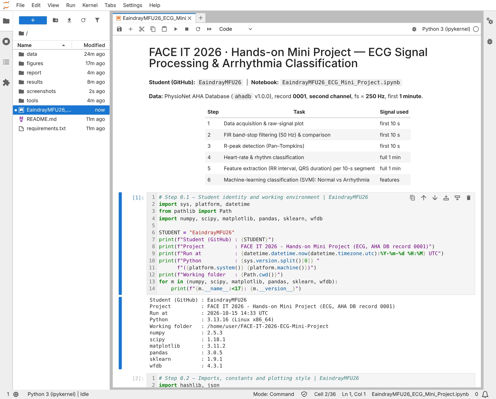
EaindrayMFU26_ECG_Mini_Project.ipynb and the identity / environment cell (Step 0.1). [ss00_overview_environment.jpg]1# Step 0.1 — Student identity and working environment | EaindrayMFU26 2import sys, platform, datetime 3from pathlib import Path 4import numpy, scipy, matplotlib, pandas, sklearn, wfdb 5 6STUDENT = "EaindrayMFU26" 7print(f"Student (GitHub) : {STUDENT}") 8print(f"Project : FACE IT 2026 - Hands-on Mini Project (ECG, AHA DB record 0001)") 9print(f"Run at : {datetime.datetime.now(datetime.timezone.utc):%Y-%m-%d %H:%M} UTC") 10print(f"Python : {sys.version.split()[0]} " 11 f"({platform.system()} {platform.machine()})") 12print(f"Working folder : {Path.cwd()}") 13for m in (numpy, scipy, matplotlib, pandas, sklearn, wfdb): 14 print(f"{m.__name__:<17}: {m.__version__}")
1# Step 0.2 — Imports, constants and plotting style | EaindrayMFU26 2import hashlib, json 3import numpy as np 4import pandas as pd 5import matplotlib.pyplot as plt 6from scipy import signal 7from scipy.integrate import trapezoid 8from sklearn.model_selection import train_test_split, StratifiedKFold, cross_val_score 9from sklearn.pipeline import make_pipeline 10from sklearn.preprocessing import StandardScaler 11from sklearn.svm import SVC 12from sklearn.metrics import confusion_matrix, classification_report 13 14FS = 250 # sampling frequency (Hz), as specified in the assignment 15CHANNEL = 1 # second signal column/channel (Python index starts at 0) 16SEED = 42 # fixed random seed -> reproducible train/test split 17DATA, FIG, RES = Path("data"), Path("figures"), Path("results") 18FIG.mkdir(exist_ok=True); RES.mkdir(exist_ok=True) 19 20# colour roles (validated colour-blind-safe categorical palette) and quiet chart chrome 21INK, INK2, MUTED, GRID, AXIS = "#0b0b0b", "#52514e", "#898781", "#e1e0d9", "#c3c2b7" 22BLUE, ORANGE, AQUA, RAW = "#2a78d6", "#eb6834", "#1baf7a", "#52514e" 23plt.rcParams.update({ 24 "font.family": "sans-serif", "font.sans-serif": ["Inter", "Arial", "DejaVu Sans"], 25 "font.size": 9.5, "axes.titlesize": 11, "axes.titleweight": "semibold", 26 "axes.titlelocation": "left", "axes.titlecolor": INK, "axes.labelcolor": INK2, 27 "axes.edgecolor": AXIS, "axes.linewidth": 0.8, "axes.spines.top": False, 28 "axes.spines.right": False, "axes.grid": True, "axes.axisbelow": True, 29 "grid.color": GRID, "grid.linewidth": 0.6, "xtick.color": AXIS, "ytick.color": AXIS, 30 "xtick.labelcolor": INK2, "ytick.labelcolor": INK2, "legend.frameon": False, 31 "legend.labelcolor": INK2, "figure.dpi": 110, "figure.facecolor": "white"}) 32 33def save(fig, name): 34 """Save a figure for the report (200 dpi PNG) in the figures/ folder.""" 35 fig.savefig(FIG / name, dpi=200, bbox_inches="tight", facecolor="white")
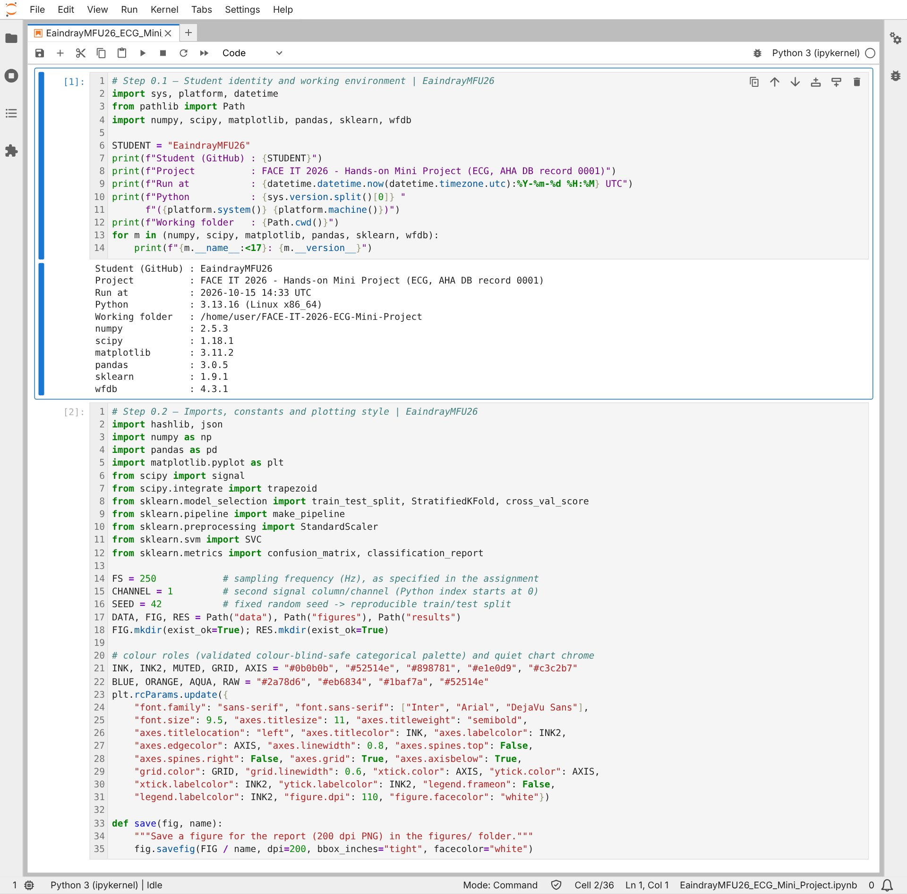
Method. The record is read with wfdb.rdrecord (first 60 s only), the second
signal column (p_signal[:, 1], in mV) is selected, and a time axis
t = n / fs with fs = 250 Hz is built. The first 10 s (2 500 samples) are
plotted as amplitude versus time.
1# Step 1.1 — Import AHA Database record 0001 from PhysioNet | EaindrayMFU26 2rec_dir = DATA / "ahadb" 3sha_lines = (rec_dir / "SHA256SUMS.txt").read_text().splitlines() 4sums = {name: digest for digest, name in (line.split() for line in sha_lines if line.strip())} 5for f in ("0001.hea", "0001.dat", "0001.atr"): 6 ok = hashlib.sha256((rec_dir / f).read_bytes()).hexdigest() == sums[f] 7 print(f"{f:<9} SHA-256 matches PhysioNet: {ok}") 8 9header = wfdb.rdheader(str(rec_dir / "0001")) 10record = wfdb.rdrecord(str(rec_dir / "0001"), sampto=60 * FS) # first 1 minute 11# online alternative: wfdb.rdrecord("0001", pn_dir="ahadb", sampto=60 * FS) 12assert record.fs == FS 13print(f"\nRecord {header.record_name}: {header.n_sig} signals, fs = {header.fs} Hz, " 14 f"full length = {header.sig_len / header.fs / 3600:.1f} h") 15print("Signals:", header.sig_name, "| units:", header.units, "| ADC gain:", header.adc_gain)
1# Step 1.2 — Second channel: 1-minute and 10-second signals | EaindrayMFU26 2ecg60 = record.p_signal[:, CHANNEL] # 1-minute ECG (mV), 15 000 samples 3t60 = np.arange(ecg60.size) / FS # time axis (s) 4ecg10, t10 = ecg60[:10 * FS], t60[:10 * FS] # first 10 s, 2 500 samples 5print(f"Channel used : column {CHANNEL + 1} of {record.n_sig} " 6 f"({record.sig_name[CHANNEL]}, {record.units[CHANNEL]})") 7print(f"Samples : 1 min = {ecg60.size}, 10 s = {ecg10.size}") 8pd.DataFrame({"first 10 s": pd.Series(ecg10).describe(), 9 "full 60 s": pd.Series(ecg60).describe()}).round(3).T
1# Step 1.3 — Plot the raw ECG (first 10 s) | EaindrayMFU26 2fig, ax = plt.subplots(figsize=(12, 3.6)) 3ax.plot(t10, ecg10, color=RAW, lw=1.0) 4ax.set(title="Raw ECG – AHA DB record 0001, channel 2, first 10 s (fs = 250 Hz)", 5 xlabel="Time (s)", ylabel="Amplitude (mV)", xlim=(0, 10)) 6ax.set_xticks(np.arange(0, 10.1, 1)) 7save(fig, "fig01_raw_ecg_10s.png"); plt.show()
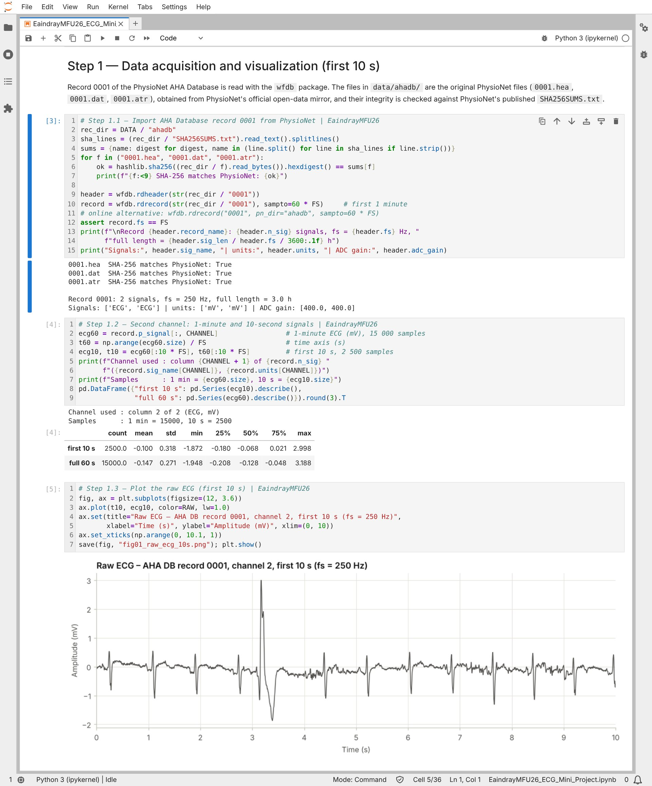
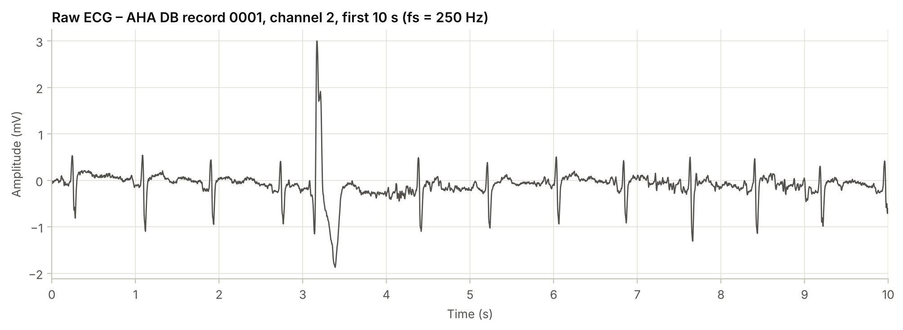
Observation. Thirteen heartbeats are visible. In this lead the normal QRS complex is an rS pattern: a small positive R wave (≈ 0.4–0.55 mV) followed by a deep S wave (≈ −1 mV). At ≈ 3.2 s there is one much larger (≈ 3 mV), wider complex that occurs early and is followed by a long pause — an ectopic (PVC-like) beat, analysed in Steps 3–6. Small high-frequency ripples and a slow baseline drift are also visible.
Design. Power-line interference is a narrow-band sinusoid, so a band-stop FIR filter centred
on 50 Hz is used. It is designed with the window method (Kaiser window; order chosen by
scipy.signal.kaiserord for ≥ 40 dB attenuation with a 2-Hz transition band) and applied
forward–backward with filtfilt. A symmetric FIR filter has linear phase; forward–backward
filtering cancels its 0.56-s group delay, so the P-QRS-T waves are not shifted.
| Parameter | Value |
|---|---|
| Filter type | FIR band-stop (window method, Kaiser window) |
| Cut-off frequencies | 48 Hz and 52 Hz (centre 50 Hz) |
| Number of taps (order) | 281 taps (order 280), Kaiser β = 3.395 |
| Attenuation at 50 Hz | 38.2 dB per pass, 76.4 dB with filtfilt |
| Pass-band ripple (≤ 46 Hz, ≥ 54 Hz) | < 0.07 dB |
| Phase | zero phase (forward–backward filtering) |
1# Step 2.1 — Design the FIR band-stop filter (50 Hz) | EaindrayMFU26 2F0, HALF_BW = 50.0, 2.0 # stop band centred on 50 Hz -> cut-offs 48 and 52 Hz 3ATTEN_DB, TRANS_HZ = 40.0, 2.0 # Kaiser design: >= 40 dB attenuation, 2-Hz transition 4numtaps, beta = signal.kaiserord(ATTEN_DB, TRANS_HZ / (FS / 2)) 5numtaps += numtaps % 2 == 0 # band-stop FIR needs an odd length (type-I linear phase) 6h_bs = signal.firwin(numtaps, [F0 - HALF_BW, F0 + HALF_BW], window=("kaiser", beta), 7 pass_zero="bandstop", fs=FS) 8 9f_h, H = signal.freqz(h_bs, worN=16384, fs=FS) 10H_db = 20 * np.log10(np.abs(H) + 1e-12) 11att50 = -H_db[np.argmin(np.abs(f_h - 50))] 12ripple = np.abs(H_db[(f_h <= 46) | (f_h >= 54)]).max() 13print(f"FIR band-stop: {numtaps} taps, Kaiser beta = {beta:.2f}, cut-offs 48 / 52 Hz") 14print(f"Attenuation at 50 Hz: {att50:.1f} dB per pass -> {2 * att50:.1f} dB with filtfilt") 15print(f"Max pass-band ripple (<= 46 Hz and >= 54 Hz): {ripple:.3f} dB") 16print(f"Group delay {(numtaps - 1) / 2 / FS:.2f} s -> cancelled by filtfilt (zero phase)") 17 18fig, (a1, a2) = plt.subplots(1, 2, figsize=(12, 3.6), gridspec_kw={"width_ratios": [2, 1]}) 19for ax, (lo, hi) in ((a1, (0, FS / 2)), (a2, (40, 60))): 20 ax.axvspan(48, 52, color=GRID, alpha=0.6, lw=0) 21 ax.plot(f_h, H_db, color=BLUE, lw=1.6) 22 ax.set(xlim=(lo, hi), ylim=(-60, 5), xlabel="Frequency (Hz)") 23a1.set(title="FIR band-stop filter – magnitude response", ylabel="Magnitude (dB)") 24a2.set(title="Zoom 40–60 Hz") 25a1.annotate("stop band 48–52 Hz", (52, -45), xytext=(62, -45), color=INK2, 26 arrowprops=dict(arrowstyle="-", color=MUTED, lw=0.8), va="center") 27fig.tight_layout(); save(fig, "fig02_fir_bandstop_response.png"); plt.show()
1# Step 2.2 — Apply the filter to the first 10 s and compare with the raw ECG | EaindrayMFU26 2def bandstop(x): 3 """Zero-phase FIR band-stop filtering (forward-backward, no phase distortion).""" 4 return signal.filtfilt(h_bs, 1.0, x) 5 6ecg10_f = bandstop(ecg10) 7removed = ecg10 - ecg10_f # what the filter took out 8 9fig, axes = plt.subplots(3, 1, figsize=(12, 8), sharex=True, 10 gridspec_kw={"height_ratios": [1, 1, 0.7]}) 11axes[0].plot(t10, ecg10, color=RAW, lw=0.9) 12axes[0].set(title="(a) Raw ECG", ylabel="mV") 13axes[1].plot(t10, ecg10_f, color=BLUE, lw=0.9) 14axes[1].set(title="(b) Filtered ECG – FIR band-stop 48–52 Hz", ylabel="mV") 15axes[1].set_ylim(axes[0].get_ylim()) 16axes[2].plot(t10, removed * 1000, color=MUTED, lw=0.7) 17axes[2].set(title="(c) Removed component = raw − filtered (note µV scale)", 18 ylabel="µV", xlabel="Time (s)", xlim=(0, 10)) 19fig.tight_layout(); save(fig, "fig03_raw_vs_filtered_10s.png"); plt.show() 20 21z = (t10 >= 0.9) & (t10 <= 1.6) # one heartbeat, overlaid 22fig, ax = plt.subplots(figsize=(12, 3.4)) 23ax.plot(t10[z], ecg10[z], color=RAW, lw=1.6, label="Raw") 24ax.plot(t10[z], ecg10_f[z], color=BLUE, lw=1.6, label="Filtered") 25ax.set(title="Raw vs filtered ECG – one heartbeat (0.9–1.6 s)", xlabel="Time (s)", 26 ylabel="Amplitude (mV)", xlim=(0.9, 1.6)) 27ax.legend(loc="lower right", ncol=2) 28save(fig, "fig03b_raw_vs_filtered_zoom.png"); plt.show()
1# Step 2.3 — Quantify the effect of the filter (spectrum, statistics) | EaindrayMFU26 2f_p, P_raw = signal.welch(ecg10 - ecg10.mean(), fs=FS, nperseg=1024) 3_, P_flt = signal.welch(ecg10_f - ecg10_f.mean(), fs=FS, nperseg=1024) 4band = (f_p >= 49) & (f_p <= 51) 5side = ((f_p > 44) & (f_p < 47)) | ((f_p > 53) & (f_p < 56)) 6rms = lambda v: np.sqrt(np.mean((v - v.mean()) ** 2)) 7pw_raw = trapezoid(P_raw[band], f_p[band]) * 1e6 # µV² 8pw_flt = trapezoid(P_flt[band], f_p[band]) * 1e6 9filter_stats = pd.Series({ 10 "50-Hz peak above neighbouring noise floor, raw (dB)": 11 10 * np.log10(P_raw[band].max() / np.median(P_raw[side])), 12 "Power 49-51 Hz, raw (µV²)": pw_raw, 13 "Power 49-51 Hz, filtered (µV²)": pw_flt, 14 "Power reduction 49-51 Hz (dB)": 10 * np.log10(pw_raw / pw_flt), 15 "RMS raw ECG (µV)": rms(ecg10) * 1000, 16 "RMS removed component (µV)": rms(removed) * 1000, 17 "Removed / raw RMS (%)": 100 * rms(removed) / rms(ecg10), 18 "Correlation raw vs filtered": np.corrcoef(ecg10, ecg10_f)[0, 1]}) 19filter_stats.to_csv(RES / "step2_filter_effect.csv", header=["value"]) 20print(filter_stats.map(lambda v: f"{v:.4g}").to_string()) 21 22fig, ax = plt.subplots(figsize=(12, 3.6)) 23ax.axvspan(48, 52, color=GRID, alpha=0.6, lw=0) 24ax.plot(f_p, 10 * np.log10(P_raw), color=RAW, lw=1.2, label="Raw") 25ax.plot(f_p, 10 * np.log10(P_flt), color=BLUE, lw=1.2, label="Filtered") 26ax.annotate(f"49–51 Hz power reduced by {filter_stats.iloc[3]:.0f} dB", (52, -100), 27 xytext=(57, -100), color=INK2, va="center", 28 arrowprops=dict(arrowstyle="-", color=MUTED, lw=0.8)) 29ax.set(title="Power spectral density (Welch) – first 10 s", xlabel="Frequency (Hz)", 30 ylabel="PSD (dB re 1 mV²/Hz)", xlim=(0, FS / 2)) 31ax.legend(loc="upper right", ncol=2) 32save(fig, "fig04_psd_raw_vs_filtered.png"); plt.show()
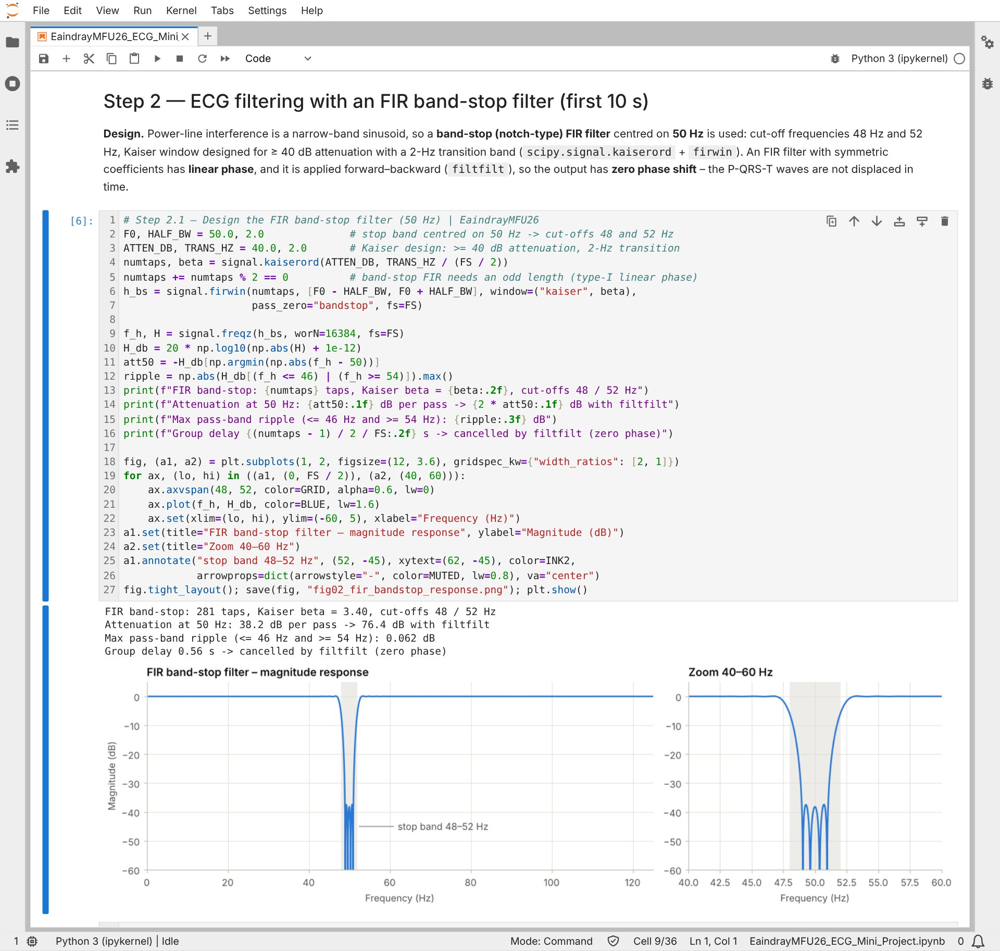
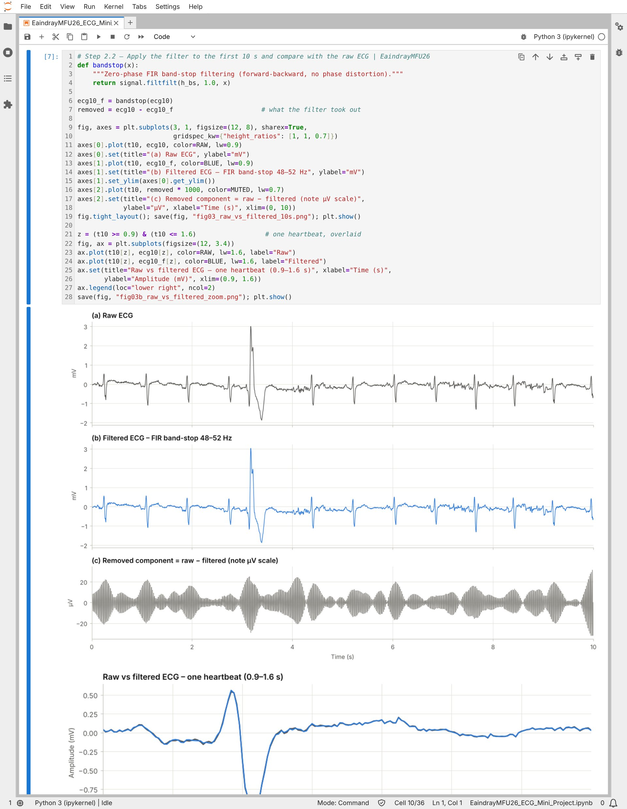
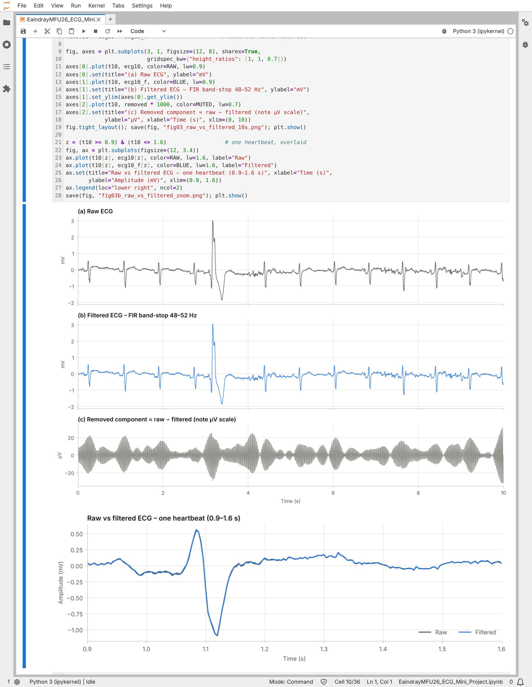
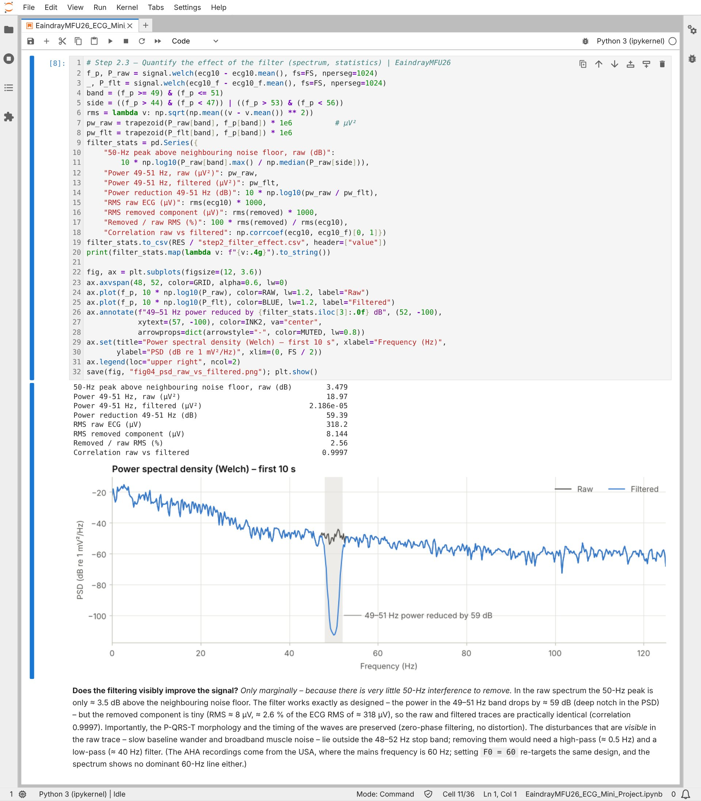
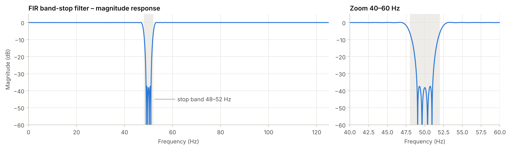
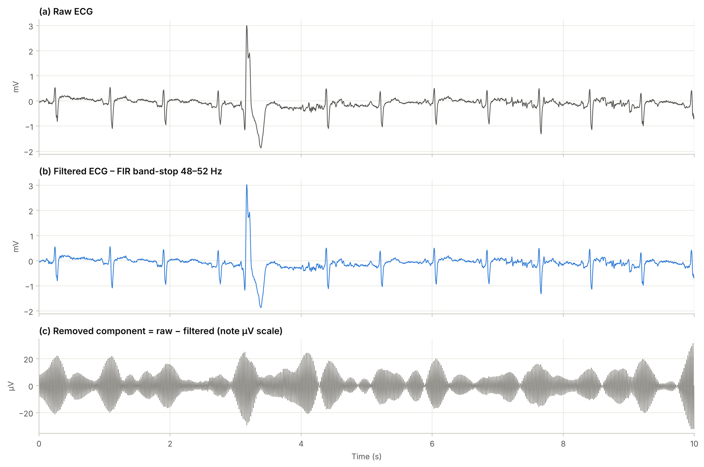
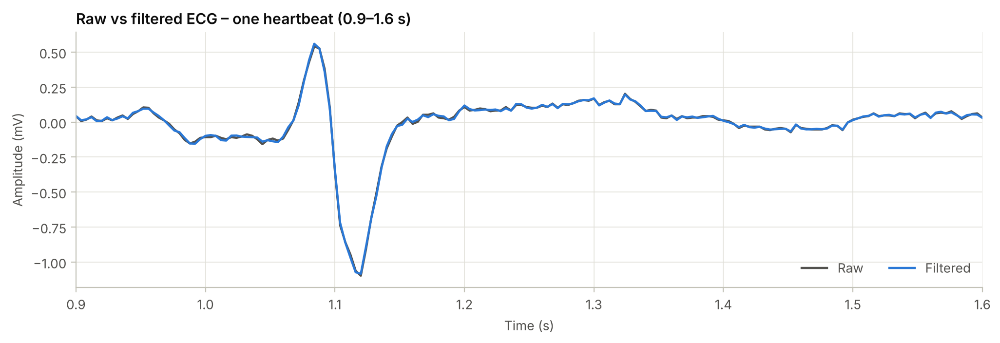
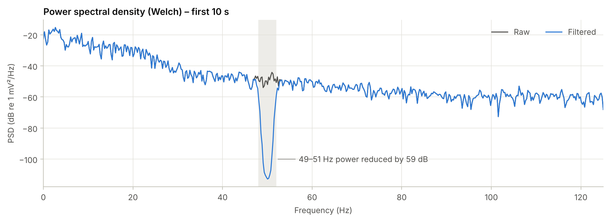
| Quantity | Value |
|---|---|
| 50-Hz peak above neighbouring noise floor, raw (dB) | 3.48 |
| Power 49-51 Hz, raw (µV²) | 18.97 |
| Power 49-51 Hz, filtered (µV²) | 2.19e-05 |
| Power reduction 49-51 Hz (dB) | 59.39 |
| RMS raw ECG (µV) | 318.15 |
| RMS removed component (µV) | 8.14 |
| Removed / raw RMS (%) | 2.56 |
| Correlation raw vs filtered | 0.9997 |
F0 = 60 re-targets
the same design, and the spectrum shows no dominant 60-Hz line either.)Method — Pan–Tompkins algorithm on the band-stop-filtered ECG: (1) band-pass 5–15 Hz (2nd-order Butterworth, zero phase) to keep the QRS energy; (2) five-point derivative to emphasise the steep QRS slopes; (3) squaring; (4) 150-ms moving-window integration (MWI); (5) adaptive thresholds on the MWI peaks (signal and noise levels updated after every peak, 200-ms refractory period, T-wave rejection within 360 ms, search-back when a beat seems missed). Each R-peak is then located as the maximum of the filtered ECG near the detected QRS.
Two simple plausibility checks make the detector robust to a muscle-noise burst later in the recording (Step 4): (a) a detection that splits one normal RR interval into two is removed (the one that least resembles the median beat), and (b) a beat that matches the median beat template poorly is moved to the best match within ±150 ms. Each beat is labelled Normal, Ectopic (PVC-like) — premature (RR < 80 % of the median), followed by a compensatory pause (> 120 %), abnormal shape (template correlation < 0.5) and > 2× larger — or Low-confidence (noise).
1# Step 3.1 — R-peak detector: Pan-Tompkins + plausibility checks | EaindrayMFU26 2def pan_tompkins(ecg, fs, pad_s=0.5): 3 """Pan & Tompkins (1985) QRS detector -> MWI peak indices and intermediate signals.""" 4 pad = int(pad_s * fs) 5 x = np.pad(ecg, pad, mode="reflect") # mirror padding (edge beats) 6 b, a = signal.butter(2, [5, 15], btype="bandpass", fs=fs) 7 bp = signal.filtfilt(b, a, x) # 1) band-pass 5-15 Hz 8 der = np.convolve(bp, np.array([1, 2, 0, -2, -1]) * fs / 8, mode="same") # 2) derivative 9 sq = der ** 2 # 3) squaring 10 w = int(round(0.150 * fs)) 11 mwi = np.convolve(sq, np.ones(w) / w, mode="same") # 4) 150-ms integration 12 cand, _ = signal.find_peaks(mwi, distance=int(0.200 * fs)) # 200-ms refractory period 13 spki, npki = 0.25 * mwi[:2 * fs].max(), 0.5 * mwi[:2 * fs].mean() # 2-s learning phase 14 thr, qrs, noise, thr_hist = npki + 0.25 * (spki - npki), [], [], [] 15 slope = lambda i: np.abs(der[max(0, i - int(0.075 * fs)):i + int(0.075 * fs)]).max() 16 for c in cand: # 5) adaptive thresholds 17 t_wave = bool(qrs) and c - qrs[-1] < 0.36 * fs and slope(c) < 0.5 * slope(qrs[-1]) 18 if mwi[c] > thr and not t_wave: 19 if len(qrs) >= 2 and c - qrs[-1] > 1.66 * np.median(np.diff(qrs[-9:])): 20 missed = [n for n in noise if qrs[-1] + 0.2 * fs < n < c - 0.2 * fs 21 and mwi[n] > 0.5 * thr] # search-back 22 if missed: 23 qrs.append(max(missed, key=lambda n: mwi[n])) 24 qrs.append(c); spki = 0.125 * mwi[c] + 0.875 * spki 25 else: 26 noise.append(c); npki = 0.125 * mwi[c] + 0.875 * npki 27 thr = npki + 0.25 * (spki - npki); thr_hist.append((c - pad, thr)) 28 qrs = np.array(sorted(qrs)) - pad 29 qrs = qrs[(qrs > -0.08 * fs) & (qrs < len(ecg) + 0.10 * fs)] 30 stages = {k: v[pad:pad + len(ecg)] 31 for k, v in dict(bp=bp, der=der, sq=sq, mwi=mwi).items()} 32 stages["thr"] = np.array(thr_hist) 33 return qrs, stages 34 35def locate_r(ecg, qrs, fs): 36 """R-peak = maximum of the filtered ECG from 100 ms before to 80 ms after each QRS.""" 37 r = [] 38 for c in qrs: 39 lo, hi = max(0, c - int(0.10 * fs)), min(len(ecg), c + int(0.08 * fs)) 40 i = lo + int(np.argmax(ecg[lo:hi])) 41 if not r or i - r[-1] > int(0.02 * fs): # skip duplicates at the edges 42 r.append(i) 43 return np.array(r) 44 45PRE, POST = int(0.10 * FS), int(0.15 * FS) # beat window around R 46 47def detect_r_peaks(ecg, fs): 48 """Pan-Tompkins -> R location -> plausibility checks -> beat labels.""" 49 qrs, stages = pan_tompkins(ecg, fs) 50 r = list(locate_r(ecg, qrs, fs)) 51 seg = lambda i: ecg[i - PRE:i + POST] 52 inside = lambda i: i - PRE >= 0 and i + POST <= len(ecg) 53 tpl = np.median([seg(i) - np.median(seg(i)) for i in r if inside(i)], axis=0) 54 corr = lambda i: np.corrcoef(seg(i), tpl)[0, 1] if inside(i) else np.nan 55 while len(r) > 2: # (a) extra detection splitting one normal RR interval 56 med = np.median(np.diff(r)) 57 extra = [k for k in range(1, len(r) - 1) if r[k + 1] - r[k - 1] < 1.5 * med] 58 if not extra: 59 break 60 r.pop(min(extra, key=lambda k: np.nan_to_num(corr(r[k]), nan=1.0))) 61 r = np.array(r); moved = np.zeros(len(r), bool) 62 for k, i in enumerate(r): # (b) re-locate a poorly matching beat (best match +-150 ms) 63 c0 = corr(i) 64 if np.isnan(c0) or c0 >= 0.6: 65 continue 66 js = np.arange(max(PRE, i - int(0.15 * fs)), min(len(ecg) - POST, i + int(0.15 * fs))) 67 cs = np.array([corr(j) for j in js]) 68 if cs.max() >= 0.6 and cs.max() - c0 >= 0.1: 69 r[k], moved[k] = js[cs.argmax()], True 70 cc = np.array([corr(i) for i in r]) # (c) beat labels 71 rr_pre, rr_post = np.r_[np.nan, np.diff(r)] / fs, np.r_[np.diff(r), np.nan] / fs 72 amp = np.array([np.ptp(ecg[max(0, i - PRE):i + POST]) for i in r]) 73 med_rr = np.median(np.diff(r)) / fs 74 ectopic = ((rr_pre < 0.8 * med_rr) & (rr_post > 1.2 * med_rr) & (cc < 0.5) 75 & (amp / np.median(amp) > 2.0)) 76 label = np.where(ectopic, "Ectopic (PVC-like)", 77 np.where(cc < 0.6, "Low-confidence (noise)", "Normal")) 78 beats = pd.DataFrame({"t_R (s)": r / fs, "R amplitude (mV)": ecg[r], 79 "template corr": cc.round(2), "re-located": moved, 80 "beat type": label}) 81 return r, beats, stages
1# Step 3.2 — Detect R-peaks in the first 10 s of the filtered ECG | EaindrayMFU26 2r10, beats10, st10 = detect_r_peaks(ecg10_f, FS) 3beats10.index = pd.RangeIndex(1, len(r10) + 1, name="beat") 4beats10.to_csv(RES / "step3_rpeaks_first10s.csv") 5print(f"R-peaks detected in the first 10 s: {len(r10)}") 6beats10.round(3)
1# Step 3.3 — Pan-Tompkins intermediate signals (first 10 s) | EaindrayMFU26 2fig, axes = plt.subplots(4, 1, figsize=(12, 8.6), sharex=True) 3for ax, key, title in zip(axes, ["bp", "der", "sq", "mwi"], 4 ["(1) Band-pass 5–15 Hz", "(2) Derivative", "(3) Squared", 5 "(4) Moving-window integration (150 ms) and adaptive threshold"]): 6 ax.plot(t10, st10[key], color=BLUE, lw=0.9) 7 ax.set_title(title, fontsize=10) 8thr_t, thr_v = st10["thr"][:, 0] / FS, st10["thr"][:, 1] 9axes[3].step(thr_t, thr_v, where="post", color=ORANGE, lw=1.2, label="adaptive threshold") 10axes[3].legend(loc="upper right") 11axes[3].set(xlabel="Time (s)", xlim=(0, 10)) 12fig.tight_layout(); save(fig, "fig05_pan_tompkins_stages_10s.png"); plt.show()
1# Step 3.4 — Overlay the detected R-peaks on the filtered ECG (first 10 s) | EaindrayMFU26 2def mark_beats(ax, t, ecg, r, labels, numbers=True): 3 """R-peak markers: filled circle = normal, diamond = ectopic, ring = low-confidence.""" 4 styles = {"Normal": ("R-peak", dict(marker="o", mfc=ORANGE)), 5 "Ectopic (PVC-like)": ("R-peak (ectopic, PVC-like)", 6 dict(marker="D", mfc=ORANGE)), 7 "Low-confidence (noise)": ("R-peak (low confidence, noise)", 8 dict(marker="o", mfc="white"))} 9 for lab, (name, sty) in styles.items(): 10 sel = r[labels == lab] 11 if sel.size: 12 ax.plot(t[sel], ecg[sel], ls="none", ms=7, mec=ORANGE, mew=1.5, label=name, **sty) 13 if numbers: 14 for k, i in enumerate(r, 1): 15 ax.annotate(str(k), (t[i], ecg[i]), xytext=(0, 7), textcoords="offset points", 16 ha="center", fontsize=7.5, color=INK2) 17 18fig, ax = plt.subplots(figsize=(12, 4)) 19ax.plot(t10, ecg10_f, color=BLUE, lw=1.0, label="Filtered ECG") 20mark_beats(ax, t10, ecg10_f, r10, beats10["beat type"].to_numpy()) 21ax.set(title=f"Detected R-peaks on the filtered ECG – first 10 s ({len(r10)} beats)", 22 xlabel="Time (s)", ylabel="Amplitude (mV)", xlim=(0, 10), ylim=(-2.2, 3.6)) 23ax.set_xticks(np.arange(0, 10.1, 1)); ax.legend(loc="upper right", ncol=3) 24save(fig, "fig06_rpeaks_10s.png"); plt.show()
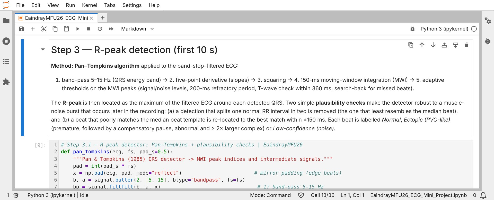
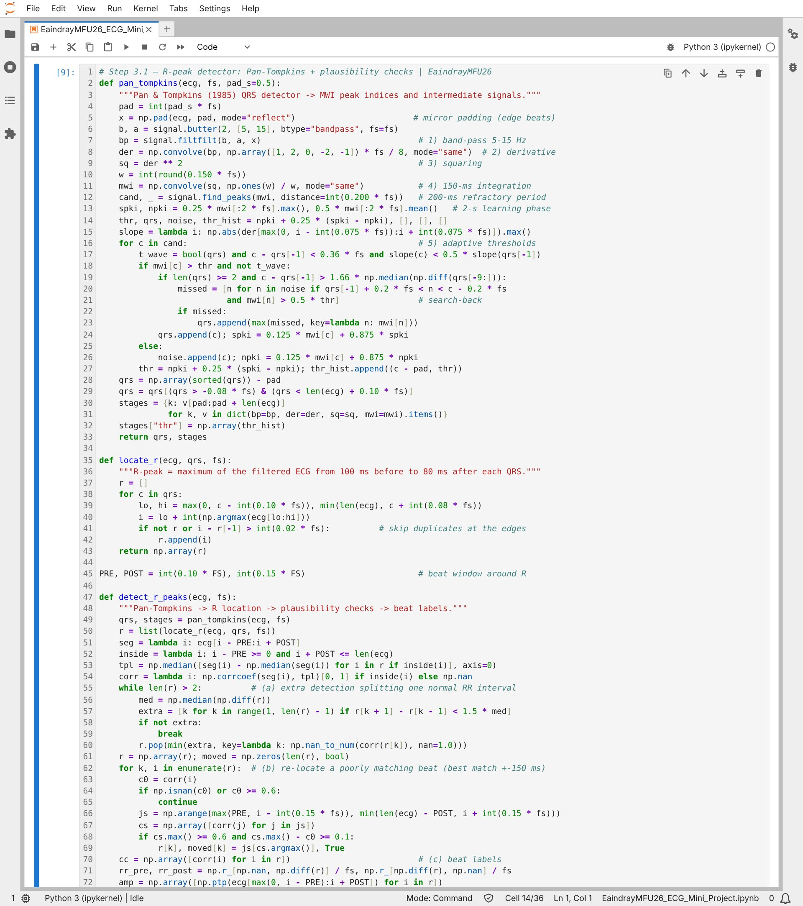
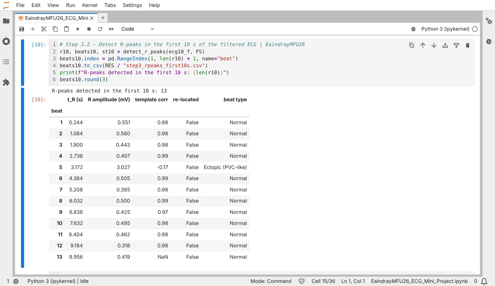
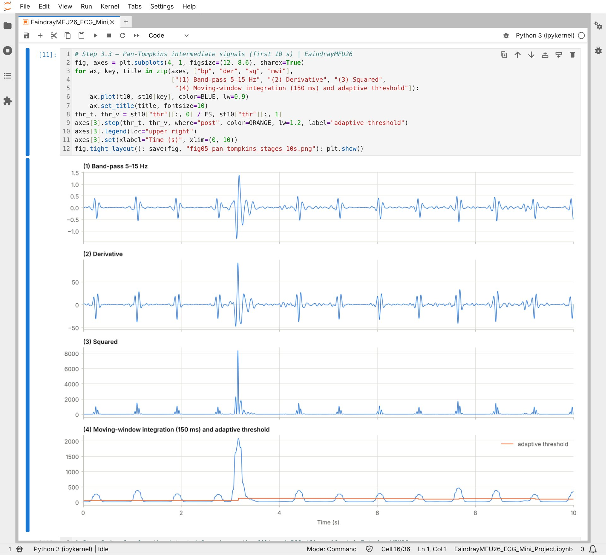
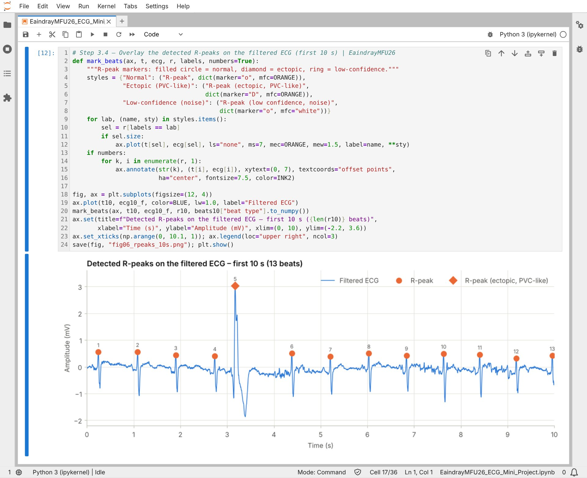
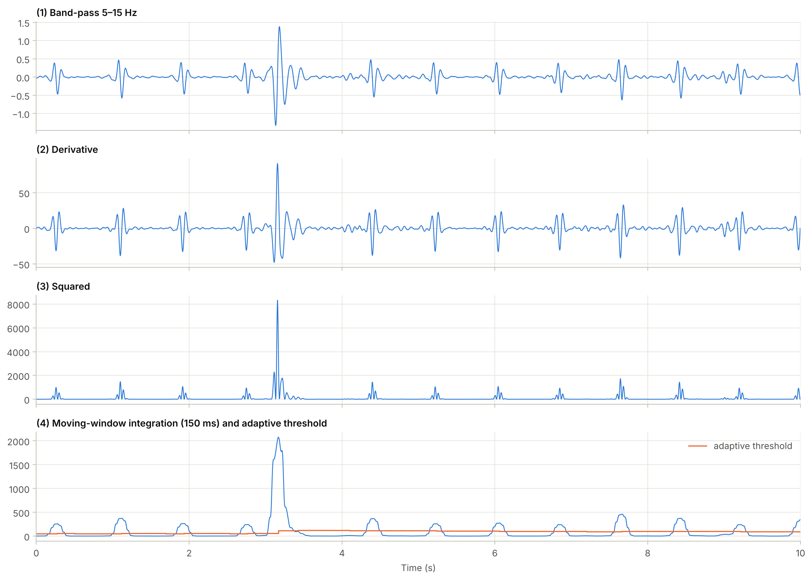
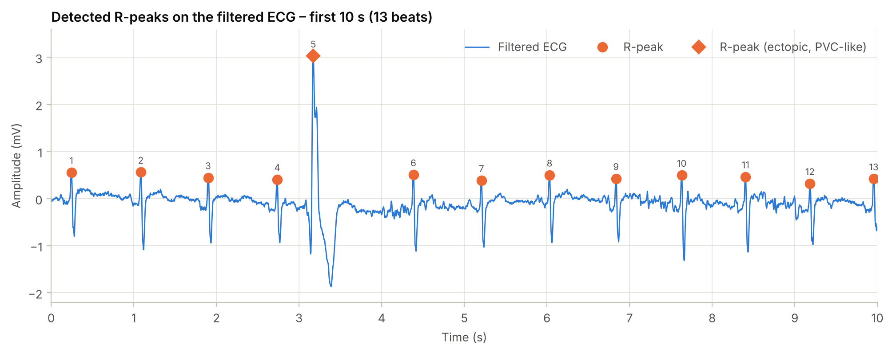
| beat | t_R (s) | R amplitude (mV) | template corr | re-located | beat type |
|---|---|---|---|---|---|
| 1 | 0.244 | 0.551 | 0.98 | False | Normal |
| 2 | 1.084 | 0.560 | 0.98 | False | Normal |
| 3 | 1.900 | 0.443 | 0.98 | False | Normal |
| 4 | 2.736 | 0.407 | 0.99 | False | Normal |
| 5 | 3.172 | 3.027 | -0.17 | False | Ectopic (PVC-like) |
| 6 | 4.384 | 0.505 | 0.99 | False | Normal |
| 7 | 5.208 | 0.385 | 0.98 | False | Normal |
| 8 | 6.032 | 0.500 | 0.99 | False | Normal |
| 9 | 6.836 | 0.425 | 0.97 | False | Normal |
| 10 | 7.632 | 0.495 | 0.98 | False | Normal |
| 11 | 8.404 | 0.462 | 0.98 | False | Normal |
| 12 | 9.184 | 0.318 | 0.98 | False | Normal |
| 13 | 9.956 | 0.419 | – | False | Normal |
Result. 13 R-peaks were detected in the first 10 s; every visible QRS complex is marked and there are no false detections. Beat 5 (t = 3.172 s) is the ectopic beat — its R amplitude is ≈ 3 mV and its shape is unlike the other beats (correlation −0.17).
Method. The same filter and detector are applied to the complete 60-s signal. The heart rate is computed from the R-peak count (HR = number of R-peaks / recording time in minutes) and, as a check, from the mean RR interval (HR = 60 / mean RR). Classification: < 60 bpm Bradycardia, 60–100 bpm Normal, > 100 bpm Tachycardia.
1# Step 4.1 — R-peaks, heart rate and rhythm classification (1 minute) | EaindrayMFU26 2ecg60_f = bandstop(ecg60) 3r60, beats60, st60 = detect_r_peaks(ecg60_f, FS) 4types60 = beats60["beat type"].to_numpy() 5 6def classify_hr(bpm): 7 return "Bradycardia" if bpm < 60 else "Tachycardia" if bpm > 100 else "Normal" 8 9duration_min = ecg60.size / FS / 60 10n_peaks = len(r60) 11rr_all = np.diff(r60) / FS 12hr_count = n_peaks / duration_min # beats counted in 1 minute 13hr_meanrr = 60 / rr_all.mean() # 60 / mean RR interval 14hr_summary = pd.Series({ 15 "Recording duration (s)": ecg60.size / FS, 16 "Total R-peaks detected": n_peaks, 17 " normal beats": int((types60 == "Normal").sum()), 18 " ectopic (PVC-like) beats": int((types60 == "Ectopic (PVC-like)").sum()), 19 " low-confidence beats (noise burst)": int((types60 == "Low-confidence (noise)").sum()), 20 "Heart rate from count (bpm)": round(hr_count, 1), 21 "Heart rate from mean RR (bpm)": round(hr_meanrr, 1), 22 "Classification": classify_hr(hr_count)}) 23hr_summary.to_csv(RES / "step4_heart_rate.csv", header=["value"]) 24print(hr_summary.to_string()) 25print(f"\nHeart Rate = {hr_count:.0f} bpm -> {classify_hr(hr_count)}")
1# Step 4.2 — The full minute with detected R-peaks (one row per 10 s) | EaindrayMFU26 2fig, axes = plt.subplots(6, 1, figsize=(12, 13), sharey=True) 3for k, ax in enumerate(axes): 4 m = (t60 >= 10 * k) & (t60 < 10 * (k + 1)) 5 ax.plot(t60[m], ecg60_f[m], color=BLUE, lw=0.8, label="Filtered ECG") 6 sel = (r60 >= 10 * k * FS) & (r60 < 10 * (k + 1) * FS) 7 mark_beats(ax, t60, ecg60_f, r60[sel], types60[sel], numbers=False) 8 ax.set_xlim(10 * k, 10 * (k + 1)); ax.set_ylim(-2.2, 3.6) 9 ax.set_title(f"{10 * k}–{10 * (k + 1)} s · {sel.sum()} R-peaks", fontsize=10) 10 ax.set_ylabel("mV") 11axes[-1].set_xlabel("Time (s)") 12handles, labels = [], [] 13for ax in axes: # one legend with every marker type 14 for h, l in zip(*ax.get_legend_handles_labels()): 15 if l not in labels: 16 handles.append(h); labels.append(l) 17fig.legend(handles, labels, loc="upper center", ncol=4, bbox_to_anchor=(0.5, 1.0)) 18fig.suptitle(f"Filtered ECG (channel 2), full minute – {n_peaks} R-peaks detected", 19 x=0.01, ha="left", fontsize=12, fontweight="semibold", y=1.02) 20fig.tight_layout(); save(fig, "fig07_rpeaks_full_minute.png"); plt.show()
1# Step 4.3 — Instantaneous heart rate across the minute | EaindrayMFU26 2inst_hr = 60 / rr_all 3t_hr = r60[1:] / FS 4fig, ax = plt.subplots(figsize=(12, 3.8)) 5ax.axhspan(60, 100, color=GRID, alpha=0.45, lw=0) 6ax.text(12, 97, "Normal range 60–100 bpm", color=INK2, va="top", fontsize=8.5) 7ax.plot(t_hr, inst_hr, color=BLUE, lw=1.6, marker="o", ms=4, mec="white", mew=0.8) 8ax.axhline(hr_count, color=INK2, lw=1.0) 9ax.annotate(f"mean {hr_count:.0f} bpm", (60, hr_count), xytext=(4, 0), 10 textcoords="offset points", va="center", fontsize=8.5, color=INK2) 11for i in np.flatnonzero(types60 == "Ectopic (PVC-like)"): 12 ax.annotate("ectopic beat", (r60[i] / FS, 60 / rr_all[i - 1]), xytext=(6, 0), 13 textcoords="offset points", fontsize=8, color=INK2, va="center") 14 ax.annotate("pause", (r60[i + 1] / FS, 60 / rr_all[i]), xytext=(6, -2), 15 textcoords="offset points", fontsize=8, color=INK2, va="center") 16k = int(np.flatnonzero(types60 == "Low-confidence (noise)")[0]) 17ax.annotate("noise burst:\nbeat position uncertain", (r60[k] / FS, 60 / rr_all[k - 1]), 18 xytext=(-8, 6), textcoords="offset points", ha="right", fontsize=8, color=INK2) 19ax.set(title="Instantaneous heart rate (60 / RR) – full minute", xlabel="Time (s)", 20 ylabel="Heart rate (bpm)", xlim=(0, 60), ylim=(30, 160)) 21save(fig, "fig08_instantaneous_hr.png"); plt.show()
1# Step 4.4 — Independent check: QRS detection on channel 1 (wfdb XQRS) | EaindrayMFU26 2# The first minute of record 0001 has no reference annotations (they start at 2.5 h), 3# so the channel-2 detections are compared with an independent detector run on channel 1. 4import logging; from wfdb import processing 5logging.getLogger("wfdb").setLevel(logging.ERROR) 6xq = processing.XQRS(sig=record.p_signal[:, 0], fs=FS); xq.detect(verbose=False) 7ref = np.asarray(xq.qrs_inds) 8dist = np.array([np.abs(ref - i).min() for i in r60]) / FS 9print(f"Channel-1 reference beats: {ref.size} | channel-2 beats: {n_peaks}") 10print(f"Channel-2 beats within 100 ms of a channel-1 beat: {(dist <= 0.1).sum()} / {n_peaks}") 11print("Unmatched channel-2 beats:", [f"{t:.2f} s ({b})" for t, b, d in 12 zip(r60 / FS, types60, dist) if d > 0.1])
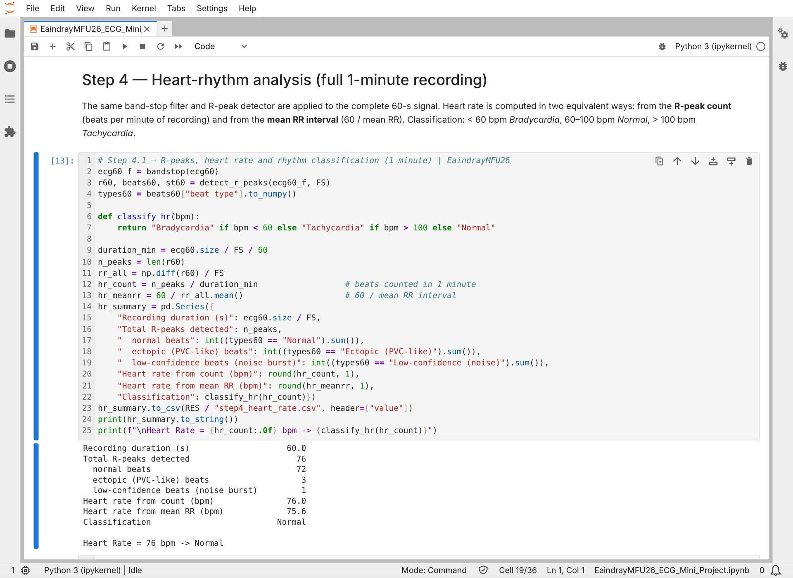
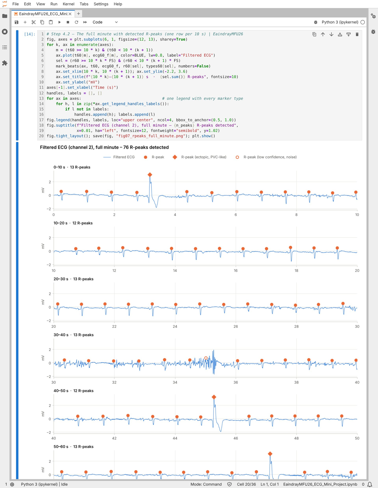
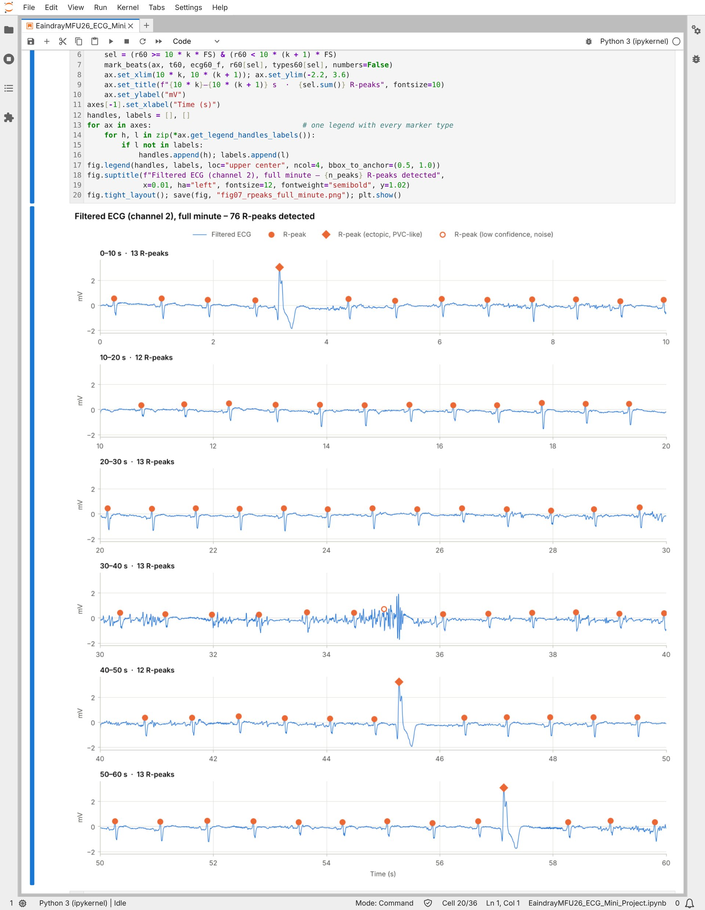
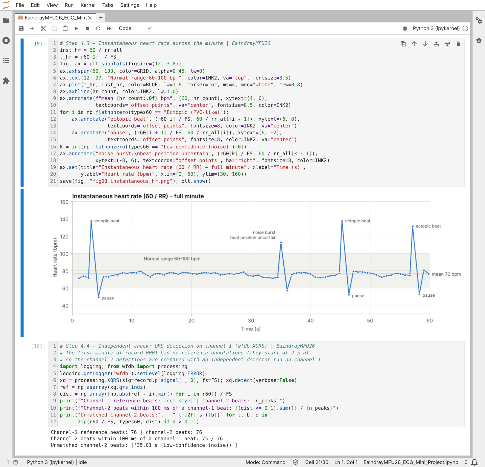
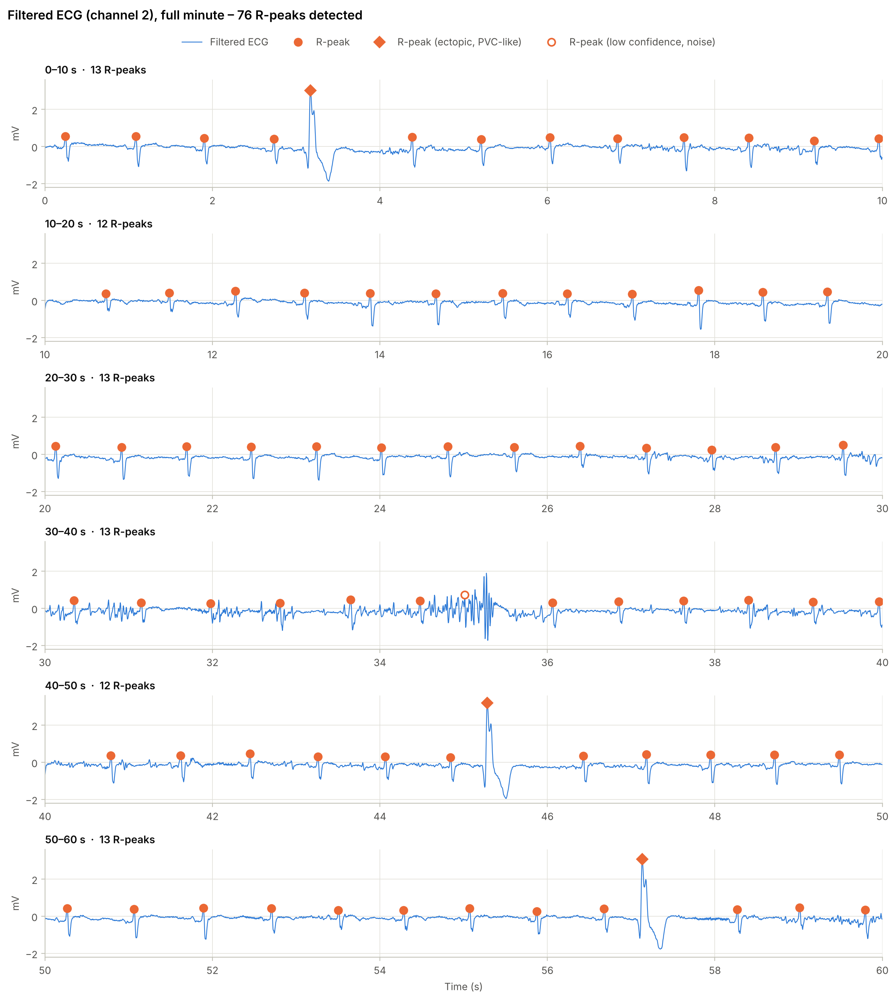
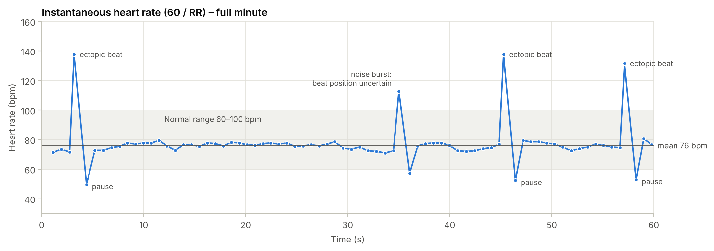
| Quantity | Value |
|---|---|
| Recording duration (s) | 60 |
| Total R-peaks detected | 76 |
| normal beats | 72 |
| ectopic (PVC-like) beats | 3 |
| low-confidence beats (noise burst) | 1 |
| Heart rate from count (bpm) | 76.0 |
| Heart rate from mean RR (bpm) | 75.6 |
| Classification | Normal |
Independent check. The first minute of record 0001 has no reference beat annotations (the annotations start at 2.5 h), so the channel-2 detections were compared with an independent detector (wfdb XQRS) run on channel 1, which is cleaner in this record. Channel 1 gives the same total of 76 beats, and 75 of the 76 channel-2 beats lie within 100 ms of a channel-1 beat. The only unmatched beat is the low-confidence beat at 35.0 s inside the muscle-noise burst. Its presence is confirmed, so the beat count is correct, but its exact position on channel 2 is uncertain. That beat is therefore excluded from the feature extraction.
Definitions used.
1# Step 5.1 — Q and S points, RR interval and QRS duration of every beat | EaindrayMFU26 2def q_s_points(ecg, r, fs, q_win=0.040, s_win=0.080): 3 """Q = minimum within q_win before R; S = minimum within s_win after R.""" 4 qw, sw = int(q_win * fs), int(s_win * fs) 5 q = np.array([i - qw + np.argmin(ecg[i - qw:i + 1]) for i in r]) 6 s = np.array([i + np.argmin(ecg[i:i + sw + 1]) for i in r]) 7 return q, s 8 9SEGMENTS = [f"{a}–{a + 10} s" for a in range(0, 60, 10)] 10q60, s60 = q_s_points(ecg60_f, r60, FS) 11feat = pd.DataFrame({ 12 "segment": pd.Categorical([SEGMENTS[int(i // (10 * FS))] for i in r60], SEGMENTS), 13 "t_Q (s)": q60 / FS, "t_R (s)": r60 / FS, "t_S (s)": s60 / FS, 14 "RR (s)": np.r_[np.nan, np.diff(r60) / FS], # interval ending at this beat 15 "QRS (s)": (s60 - q60) / FS, "beat type": types60}, 16 index=pd.RangeIndex(1, n_peaks + 1, name="beat")) 17is_normal = feat["beat type"].eq("Normal") 18feat["NN beat"] = is_normal & is_normal.shift(1, fill_value=False) # beat & previous normal 19feat.round(4).to_csv(RES / "step5_beat_features.csv") 20print(f"Beats: {n_peaks} | normal: {is_normal.sum()} | NN beats used for features: " 21 f"{feat['NN beat'].sum()}") 22feat[~feat["NN beat"]].round(3) # the beats that are NOT used, and why
1# Step 5.2 — Feature table per 10-s segment (mean ± SD of the beats) | EaindrayMFU26 2def summarise(g): 3 nn, nq = g.loc[g["NN beat"], "RR (s)"], g.loc[g["beat type"].eq("Normal"), "QRS (s)"] 4 return pd.Series({"beats detected": len(g), 5 "excluded beats": int((~g["beat type"].eq("Normal")).sum()), 6 "RR n": len(nn), "RR mean (s)": nn.mean(), "RR SD (s)": nn.std(), 7 "RR median (s)": nn.median(), "QRS n": len(nq), 8 "QRS mean (s)": nq.mean(), "QRS SD (s)": nq.std(), 9 "QRS median (s)": nq.median()}) 10 11seg_detail = feat.groupby("segment", observed=False).apply(summarise) 12seg_detail.round(4).to_csv(RES / "step5_segment_features_detailed.csv") 13table5 = pd.DataFrame({ 14 "Segment": SEGMENTS, 15 "RR Interval (s)": [f"{m:.3f} ± {s:.3f}" for m, s in 16 zip(seg_detail["RR mean (s)"], seg_detail["RR SD (s)"])], 17 "QRS Duration (s)": [f"{m:.3f} ± {s:.3f}" for m, s in 18 zip(seg_detail["QRS mean (s)"], seg_detail["QRS SD (s)"])]}) 19table5.to_csv(RES / "step5_segment_features.csv", index=False) 20print("Values are MEAN ± SD of the normal beats in each segment\n") 21print(table5.to_string(index=False)) 22seg_detail.round(4)
1# Step 5.3 — Q, R and S points on example beats | EaindrayMFU26 2examples = [(1.0, "Normal beat"), (3.17, "Ectopic (PVC-like) beat"), (13.1, "Normal beat")] 3fig, axes = plt.subplots(1, 3, figsize=(12, 3.8), sharey=True) 4for ax, (tc, name) in zip(axes, examples): 5 k = int(np.argmin(np.abs(r60 / FS - tc))) 6 m = (t60 >= r60[k] / FS - 0.30) & (t60 <= r60[k] / FS + 0.45) 7 ax.axvspan(q60[k] / FS, s60[k] / FS, color=AQUA, alpha=0.12, lw=0) 8 ax.plot(t60[m], ecg60_f[m], color=BLUE, lw=1.3) 9 ax.plot(r60[k] / FS, ecg60_f[r60[k]], "o", color=ORANGE, ms=7, mec="white", label="R") 10 ax.plot(q60[k] / FS, ecg60_f[q60[k]], ">", color=AQUA, ms=8, mec="white", label="Q") 11 ax.plot(s60[k] / FS, ecg60_f[s60[k]], "<", color=AQUA, ms=8, mec="white", label="S") 12 qrs_ms = (s60[k] - q60[k]) / FS * 1000 13 ax.set_title(f"{name} #{k + 1}\nQRS = {qrs_ms:.0f} ms", fontsize=10) 14 ax.set_xlabel("Time (s)") 15axes[0].set_ylabel("Amplitude (mV)"); axes[0].legend(loc="upper left", ncol=3) 16fig.tight_layout(); save(fig, "fig09_qrs_fiducials.png"); plt.show()
1# Step 5.4 — Beat features per segment with segment mean ± SD | EaindrayMFU26 2fig, axes = plt.subplots(1, 2, figsize=(12, 4)) 3for ax, col, use, title in [(axes[0], "RR (s)", feat["NN beat"], "RR interval (NN beats)"), 4 (axes[1], "QRS (s)", is_normal, "QRS duration (normal beats)")]: 5 for j, segname in enumerate(SEGMENTS): 6 v = feat.loc[use & feat["segment"].eq(segname), col] 7 jitter = np.random.default_rng(j).uniform(-0.12, 0.12, v.size) 8 ax.plot(j + jitter, v, "o", color=BLUE, ms=4, alpha=0.55, mec="none") 9 ax.errorbar(j + 0.3, v.mean(), yerr=v.std(), fmt="o", color=INK, ms=6, 10 capsize=3, lw=1.2) 11 ax.set_xticks(range(6), SEGMENTS) 12 ax.set(title=title, ylabel=col.replace("(s)", "(s)")) 13axes[0].plot([], [], "o", color=BLUE, alpha=0.55, label="individual beats") 14axes[0].errorbar([], [], yerr=[], fmt="o", color=INK, label="segment mean ± SD") 15axes[0].legend(loc="lower left") 16fig.tight_layout(); save(fig, "fig10_segment_features.png"); plt.show()
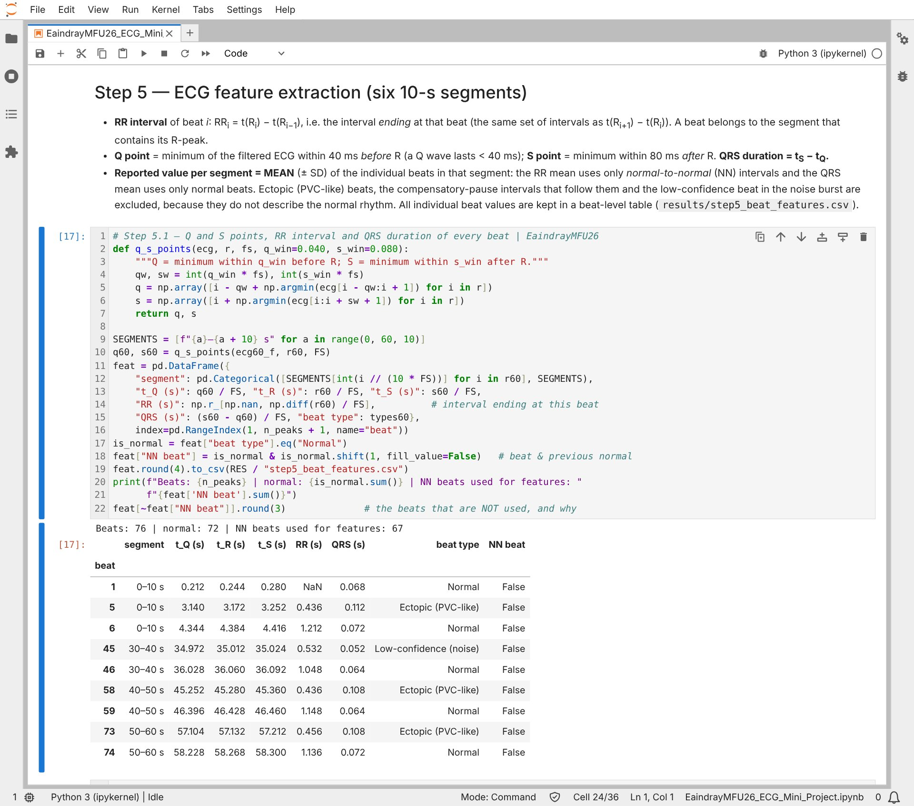
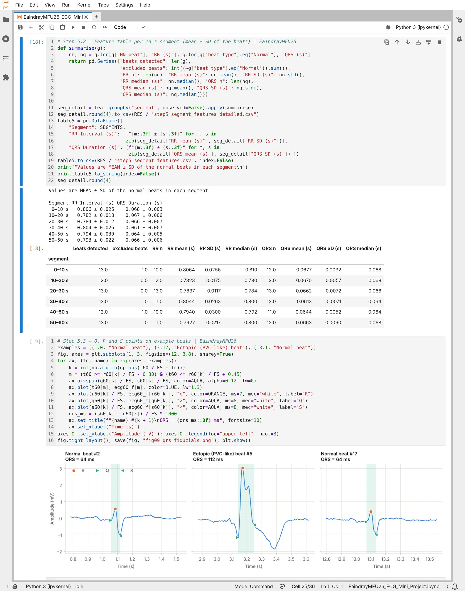
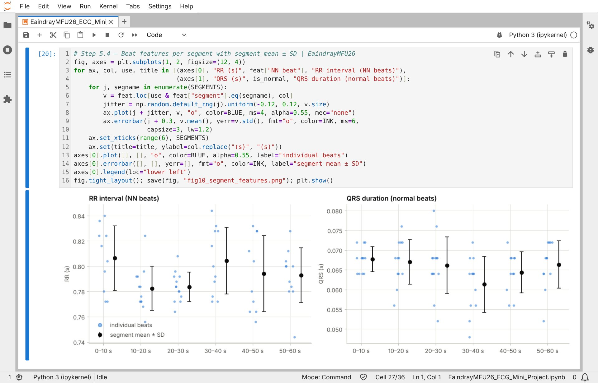
| Segment | RR Interval (s) | QRS Duration (s) |
|---|---|---|
| 0–10 s | 0.806 ± 0.026 | 0.068 ± 0.003 |
| 10–20 s | 0.782 ± 0.018 | 0.067 ± 0.006 |
| 20–30 s | 0.784 ± 0.012 | 0.066 ± 0.007 |
| 30–40 s | 0.804 ± 0.026 | 0.061 ± 0.007 |
| 40–50 s | 0.794 ± 0.030 | 0.064 ± 0.005 |
| 50–60 s | 0.793 ± 0.022 | 0.066 ± 0.006 |
| segment | beats detected | excluded beats | RR n | RR mean (s) | RR SD (s) | RR median (s) | QRS n | QRS mean (s) | QRS SD (s) | QRS median (s) |
|---|---|---|---|---|---|---|---|---|---|---|
| 0–10 s | 13 | 1 | 10 | 0.8064 | 0.0256 | 0.8100 | 12 | 0.0677 | 0.0032 | 0.0680 |
| 10–20 s | 12 | 0 | 12 | 0.7823 | 0.0175 | 0.7800 | 12 | 0.0670 | 0.0057 | 0.0680 |
| 20–30 s | 13 | 0 | 13 | 0.7837 | 0.0117 | 0.7840 | 13 | 0.0662 | 0.0072 | 0.0680 |
| 30–40 s | 13 | 1 | 11 | 0.8044 | 0.0263 | 0.8000 | 12 | 0.0613 | 0.0071 | 0.0640 |
| 40–50 s | 12 | 1 | 10 | 0.7940 | 0.0300 | 0.7920 | 11 | 0.0644 | 0.0052 | 0.0640 |
| 50–60 s | 13 | 1 | 11 | 0.7927 | 0.0217 | 0.8000 | 12 | 0.0663 | 0.0060 | 0.0680 |
| beat | segment | t_R (s) | RR (s) | QRS (s) | beat type | reason |
|---|---|---|---|---|---|---|
| 1 | 0–10 s | 0.244 | – | 0.068 | Normal | first beat – no preceding R-peak |
| 5 | 0–10 s | 3.172 | 0.436 | 0.112 | Ectopic (PVC-like) | ectopic (PVC-like) beat |
| 6 | 0–10 s | 4.384 | 1.212 | 0.072 | Normal | RR = compensatory pause after an ectopic beat |
| 45 | 30–40 s | 35.012 | 0.532 | 0.052 | Low-confidence (noise) | low-confidence beat (noise burst) |
| 46 | 30–40 s | 36.060 | 1.048 | 0.064 | Normal | RR adjacent to the low-confidence beat |
| 58 | 40–50 s | 45.280 | 0.436 | 0.108 | Ectopic (PVC-like) | ectopic (PVC-like) beat |
| 59 | 40–50 s | 46.428 | 1.148 | 0.064 | Normal | RR = compensatory pause after an ectopic beat |
| 73 | 50–60 s | 57.132 | 0.456 | 0.108 | Ectopic (PVC-like) | ectopic (PVC-like) beat |
| 74 | 50–60 s | 58.268 | 1.136 | 0.072 | Normal | RR = compensatory pause after an ectopic beat |
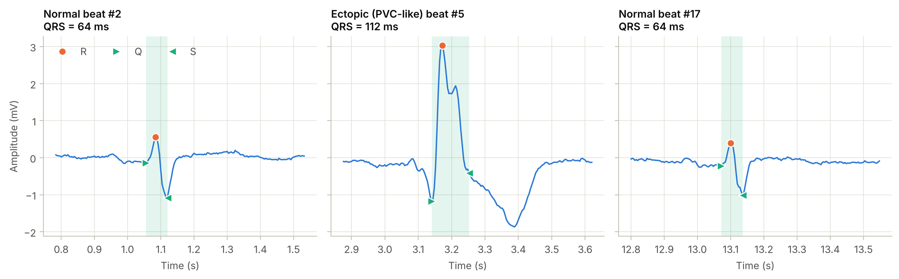
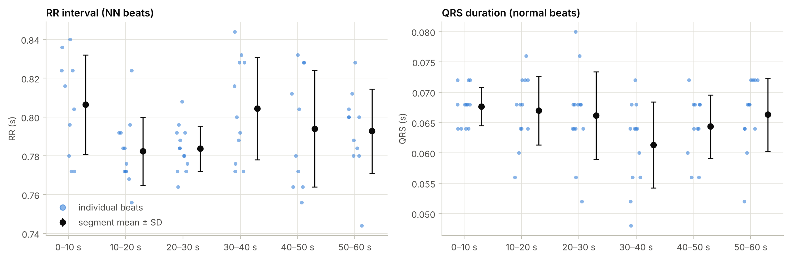
Observation. The features are stable across the six segments: mean RR 0.782–0.806 s (≈ 75–77 bpm) and mean QRS 0.061–0.068 s, far below the 0.12-s limit of a wide QRS. For the ectopic beats the QRS is 0.108–0.112 s and the RR only 0.44–0.46 s.
A. Normal-class data. The RR interval and QRS duration of the 67 individual
NN beats from Step 5 are labelled Normal. Individual beat values are used rather than only the
six segment means because the arrhythmia samples are also individual beats: both classes are then
described in the same unit (one sample = one beat), and the classes are reasonably balanced
(67 vs 50 instead of 6 vs 50). The six-segment-mean version is
tested as a robustness check (Step 6.6).
B. Arrhythmia-class data. The 50 beats from the assignment table
(data/arrhythmia_training_data.csv), labelled Arrhythmia.
C. Model. X = [RR interval, QRS duration], y = [Normal, Arrhythmia]. A Support Vector Machine
with an RBF kernel (C = 1, γ = 'scale') is trained after feature standardisation, using a stratified
70 % / 30 % train/test split (random_state = 42). An RBF kernel is chosen because arrhythmic beats lie on
both sides of the normal RR range (too short and too long). A single straight boundary in RR
cannot separate them; a curved boundary can.
1# Step 6.1 — Data set: Normal (Step 5) + Arrhythmia (assignment table) | EaindrayMFU26 2nn = feat[feat["NN beat"]] 3normal_df = pd.DataFrame({"sample": [f"N{i:02d}" for i in range(1, len(nn) + 1)], 4 "RR (s)": nn["RR (s)"].to_numpy(), 5 "QRS (s)": nn["QRS (s)"].to_numpy(), 6 "label": "Normal", "source": "AHA 0001, ch 2 (Step 5)"}) 7arr = pd.read_csv(DATA / "arrhythmia_training_data.csv") 8arr_df = pd.DataFrame({"sample": [f"A{i:02d}" for i in arr["beat_no"]], 9 "RR (s)": arr["RR_interval_s"], "QRS (s)": arr["QRS_duration_s"], 10 "label": "Arrhythmia", "source": "assignment table"}) 11dataset = pd.concat([normal_df, arr_df], ignore_index=True) 12X = dataset[["RR (s)", "QRS (s)"]].to_numpy() # X = [RR interval, QRS duration] 13y = (dataset["label"] == "Arrhythmia").astype(int).to_numpy() # 0 = Normal, 1 = Arrhythmia 14print(dataset["label"].value_counts().to_string(), "\n") 15print(dataset.groupby("label")[["RR (s)", "QRS (s)"]].describe().round(3).T.to_string()) 16 17fig, ax = plt.subplots(figsize=(10, 5)) 18for lab, colr in (("Normal", BLUE), ("Arrhythmia", ORANGE)): 19 d = dataset[dataset["label"] == lab] 20 ax.plot(d["RR (s)"], d["QRS (s)"], "o", ms=7, color=colr, mec="white", mew=1, ls="none", 21 label=f"{lab} (n = {len(d)})") 22ax.set(title="Combined data set – X = [RR interval, QRS duration]", xlabel="RR interval (s)", 23 ylabel="QRS duration (s)", xlim=(0.1, 1.7), ylim=(0.03, 0.22)) 24ax.legend(loc="upper center", ncol=2) 25save(fig, "fig11_dataset_scatter.png"); plt.show()
1# Step 6.2 — Train/test split and model training (SVM, RBF kernel) | EaindrayMFU26 2idx = np.arange(len(dataset)) 3X_tr, X_te, y_tr, y_te, i_tr, i_te = train_test_split( 4 X, y, idx, test_size=0.30, stratify=y, random_state=SEED) 5model = make_pipeline(StandardScaler(), SVC(kernel="rbf", C=1.0, gamma="scale")) 6model.fit(X_tr, y_tr) 7dataset["split"] = np.where(np.isin(idx, i_te), "test", "train") 8dataset.round(5).to_csv(RES / "step6_dataset.csv", index=False) 9print(f"Training set: {len(y_tr)} samples (Normal {np.sum(y_tr == 0)}, " 10 f"Arrhythmia {np.sum(y_tr == 1)})") 11print(f"Test set : {len(y_te)} samples (Normal {np.sum(y_te == 0)}, " 12 f"Arrhythmia {np.sum(y_te == 1)})") 13print(f"Support vectors: {model[-1].n_support_.sum()} | training accuracy: " 14 f"{model.score(X_tr, y_tr):.3f}")
1# Step 6.3 — Predict the class of the test samples | EaindrayMFU26 2names = np.array(["Normal", "Arrhythmia"]) 3y_pred = model.predict(X_te) 4pred_table = dataset.iloc[i_te][["sample", "RR (s)", "QRS (s)", "label"]].copy() 5pred_table["predicted"] = names[y_pred] 6pred_table["decision score"] = model.decision_function(X_te).round(2) 7pred_table["correct"] = pred_table["label"] == pred_table["predicted"] 8pred_table = pred_table.sort_values("sample").reset_index(drop=True) 9pred_table.round(4).to_csv(RES / "step6_test_predictions.csv", index=False) 10print(f"Correct predictions: {pred_table['correct'].sum()} / {len(pred_table)}") 11pred_table.round(4)
1# Step 6.4 — Evaluate: confusion matrix and performance metrics | EaindrayMFU26 2cm = confusion_matrix(y_te, y_pred, labels=[0, 1]) 3tn, fp, fn, tp = cm.ravel() # positive class = Arrhythmia 4metrics = pd.Series({"Accuracy": (tp + tn) / cm.sum(), 5 "Sensitivity / Recall": tp / (tp + fn), 6 "Specificity": tn / (tn + fp), 7 "Precision (PPV)": tp / (tp + fp), 8 "F1-score": 2 * tp / (2 * tp + fp + fn)}) 9cv = cross_val_score(model, X, y, cv=StratifiedKFold(5, shuffle=True, random_state=SEED)) 10metrics["5-fold CV accuracy (mean)"], metrics["5-fold CV accuracy (SD)"] = cv.mean(), cv.std() 11metrics.round(4).to_csv(RES / "step6_metrics.csv", header=["value"]) 12print(pd.DataFrame(cm, index=["true Normal", "true Arrhythmia"], 13 columns=["pred Normal", "pred Arrhythmia"]), "\n") 14print(metrics.round(4).to_string(), "\n") 15print(classification_report(y_te, y_pred, target_names=names, digits=3)) 16 17fig, ax = plt.subplots(figsize=(4.6, 4)) 18ax.imshow(cm, cmap=plt.matplotlib.colors.LinearSegmentedColormap.from_list( 19 "blue", ["#cde2fb", "#104281"]), vmin=0, vmax=cm.max()) 20for (a, b), v in np.ndenumerate(cm): 21 ax.text(b, a, str(v), ha="center", va="center", fontsize=16, fontweight="semibold", 22 color="white" if v > cm.max() / 2 else INK) 23ax.set_xticks([0, 1], names); ax.set_yticks([0, 1], names) 24ax.set(xlabel="Predicted class", ylabel="True class", title="Confusion matrix – test set") 25ax.grid(False); [s.set_visible(False) for s in ax.spines.values()] 26save(fig, "fig12_confusion_matrix.png"); plt.show()
1# Step 6.5 — Decision boundary; model applied to the excluded beats | EaindrayMFU26 2is_ect = feat["beat type"].eq("Ectopic (PVC-like)") 3extra = feat[is_ect | is_ect.shift(1, fill_value=False)][["t_R (s)", "RR (s)", "QRS (s)"]] 4extra.insert(0, "beat kind", np.where(is_ect[extra.index], "ectopic (PVC-like)", 5 "sinus beat after the pause")) 6Xe = extra[["RR (s)", "QRS (s)"]].to_numpy() 7extra["predicted"], extra["decision score"] = names[model.predict(Xe)], \ 8 model.decision_function(Xe).round(2) 9ect = extra[extra["beat kind"].str.startswith("ectopic")] 10extra.round(3).to_csv(RES / "step6_excluded_beats_predictions.csv") 11print("Beats excluded from Step 6 (never used for training or testing):") 12print(extra.round(3).to_string(), "\n") 13 14gx, gy = np.meshgrid(np.linspace(0.1, 1.7, 400), np.linspace(0.03, 0.22, 400)) 15Z = model.decision_function(np.c_[gx.ravel(), gy.ravel()]).reshape(gx.shape) 16fig, ax = plt.subplots(figsize=(10, 5.6)) 17ax.contourf(gx, gy, Z > 0, levels=[-0.5, 0.5, 1.5], colors=[BLUE, ORANGE], alpha=0.10) 18ax.contour(gx, gy, Z, levels=[0], colors=INK, linewidths=1.2) 19for lab, colr in (("Normal", BLUE), ("Arrhythmia", ORANGE)): 20 for split, face in (("train", colr), ("test", "white")): 21 d = dataset[(dataset["label"] == lab) & (dataset["split"] == split)] 22 ax.plot(d["RR (s)"], d["QRS (s)"], "o", ms=7, mfc=face, mec=colr, mew=1.6, 23 label=f"{lab} – {split}", ls="none") 24ax.plot(ect["RR (s)"], ect["QRS (s)"], "D", ms=8, mfc=AQUA, mec="white", mew=1.2, ls="none", 25 label="candidate's ectopic beats (not used)") 26ax.plot([], [], color=INK, lw=1.2, label="SVM decision boundary") 27ax.set(title="SVM (RBF) decision regions – RR interval vs QRS duration", 28 xlabel="RR interval (s)", ylabel="QRS duration (s)", xlim=(0.1, 1.7), 29 ylim=(0.03, 0.22)) 30ax.legend(loc="upper center", ncol=3, fontsize=8.5, bbox_to_anchor=(0.5, -0.13)) 31save(fig, "fig13_decision_boundary.png"); plt.show()
1# Step 6.6 — Robustness check: the six segment means as the Normal class | EaindrayMFU26 2X_seg = np.vstack([seg_detail[["RR mean (s)", "QRS mean (s)"]].to_numpy(), 3 arr_df[["RR (s)", "QRS (s)"]].to_numpy()]) 4y_seg = np.r_[np.zeros(6, int), np.ones(len(arr_df), int)] 5Xs_tr, Xs_te, ys_tr, ys_te = train_test_split(X_seg, y_seg, test_size=0.30, stratify=y_seg, 6 random_state=SEED) 7m_seg = make_pipeline(StandardScaler(), SVC(kernel="rbf", C=1.0, gamma="scale")) 8ys_pred = m_seg.fit(Xs_tr, ys_tr).predict(Xs_te) 9print(f"Segment-mean version: {len(y_seg)} samples (6 Normal, {len(arr_df)} Arrhythmia)") 10print("Confusion matrix (test):\n", confusion_matrix(ys_te, ys_pred, labels=[0, 1])) 11print(f"Accuracy: {np.mean(ys_te == ys_pred):.3f}")
1# Step 7 — Save a summary of all key results | EaindrayMFU26 2summary = { 3 "student": STUDENT, "record": "ahadb/0001", "channel": CHANNEL + 1, "fs_hz": FS, 4 "filter": {"type": "FIR band-stop (Kaiser window)", "numtaps": int(numtaps), 5 "beta": round(float(beta), 3), "cutoffs_hz": [F0 - HALF_BW, F0 + HALF_BW], 6 "atten_50hz_db_single_pass": round(float(att50), 1), 7 **{k: float(v) for k, v in filter_stats.items()}}, 8 "rpeaks_first10s": int(len(r10)), 9 "heart_rate": {"n_peaks": int(n_peaks), "hr_count_bpm": round(float(hr_count), 1), 10 "hr_mean_rr_bpm": round(float(hr_meanrr), 1), 11 "n_ectopic": int((types60 == "Ectopic (PVC-like)").sum()), 12 "n_low_confidence": int((types60 == "Low-confidence (noise)").sum()), 13 "classification": classify_hr(hr_count)}, 14 "segment_table": table5.to_dict(orient="records"), 15 "ml": {"n_normal": int((y == 0).sum()), "n_arrhythmia": int((y == 1).sum()), 16 "n_train": int(len(y_tr)), "n_test": int(len(y_te)), 17 "confusion_matrix": cm.tolist(), **{k: float(v) for k, v in metrics.items()}, 18 "ectopic_predictions": ect["predicted"].tolist(), 19 "post_pause_predictions": extra.loc[~extra["beat kind"].str.startswith("ectopic"), 20 "predicted"].tolist(), 21 "segment_mean_check_accuracy": float(np.mean(ys_te == ys_pred))}} 22(RES / "summary.json").write_text(json.dumps(summary, indent=2, ensure_ascii=False)) 23print(json.dumps(summary["heart_rate"], indent=1, ensure_ascii=False)) 24print(json.dumps({k: summary["ml"][k] for k in ("confusion_matrix", "Accuracy")}, indent=1))
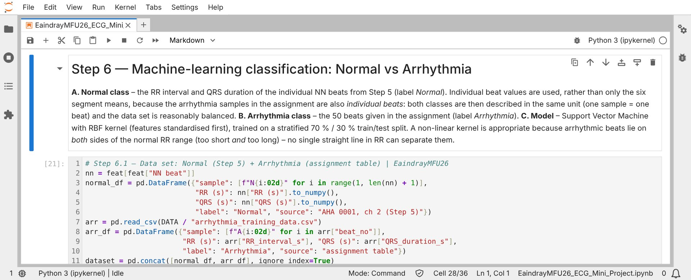
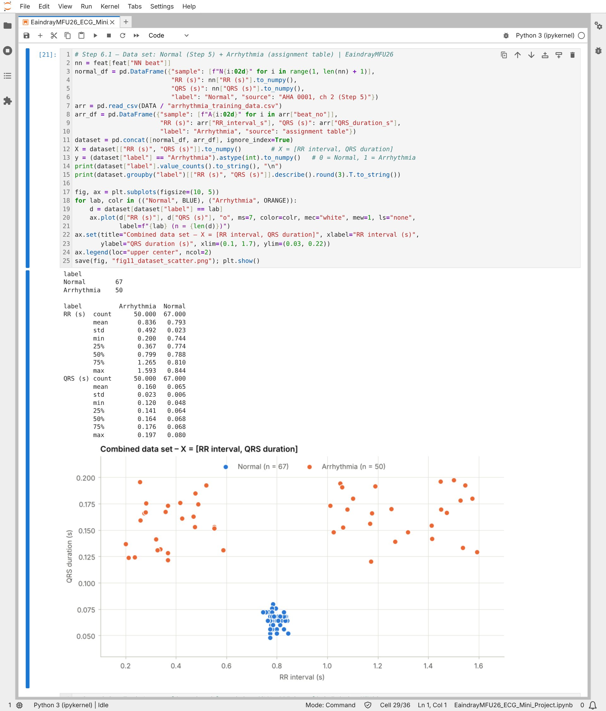
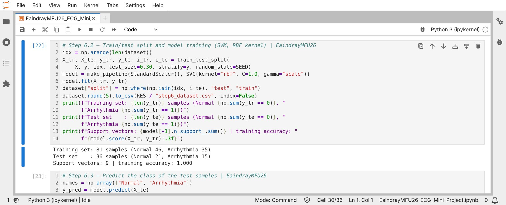
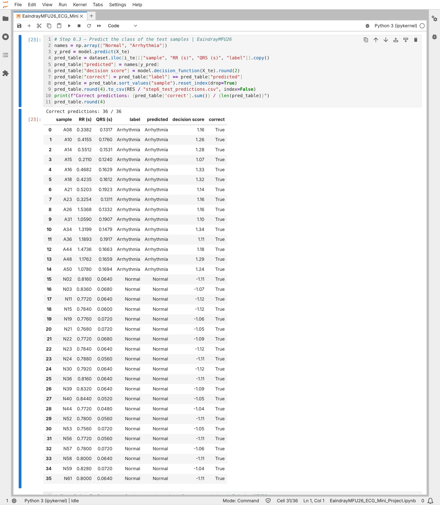
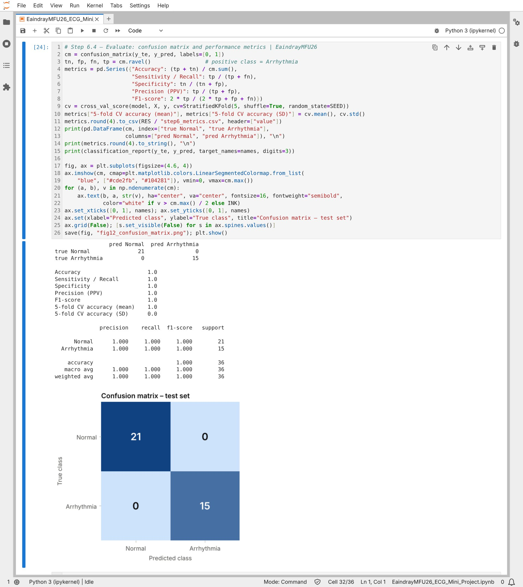
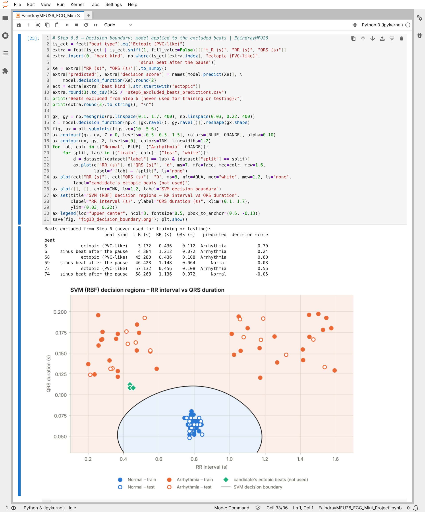
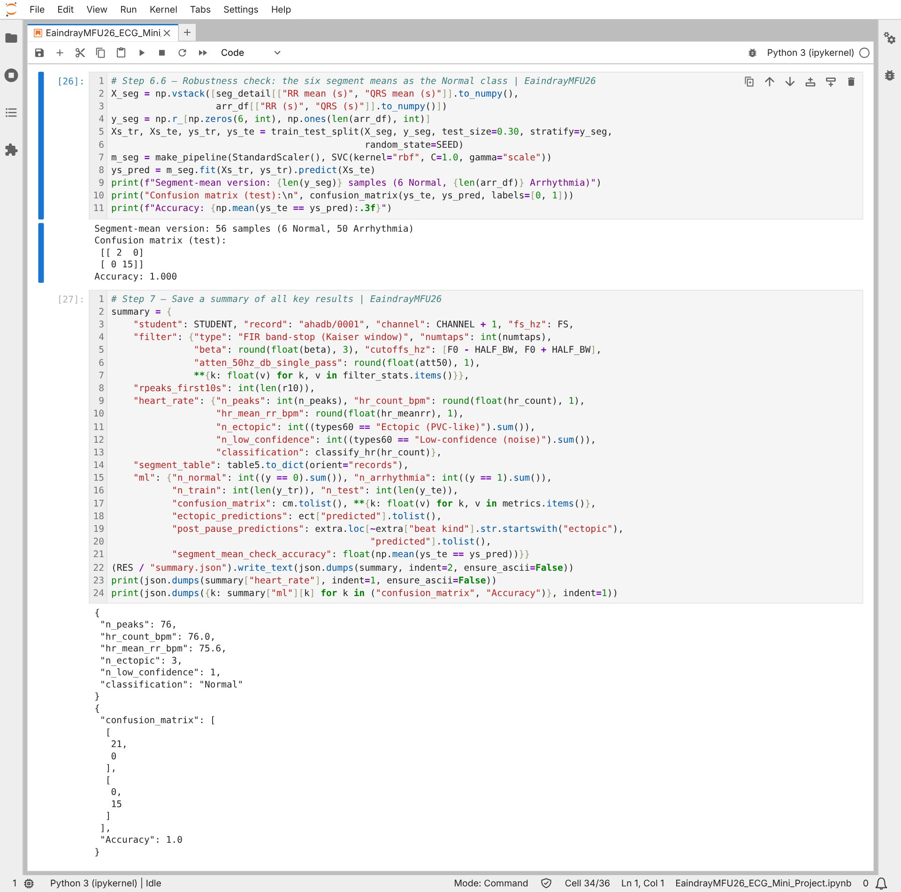
| class | RR (s) count | RR (s) mean | RR (s) std | RR (s) min | RR (s) max | QRS (s) count | QRS (s) mean | QRS (s) std | QRS (s) min | QRS (s) max |
|---|---|---|---|---|---|---|---|---|---|---|
| Arrhythmia | 50 | 0.836 | 0.492 | 0.200 | 1.593 | 50 | 0.160 | 0.023 | 0.120 | 0.197 |
| Normal | 67 | 0.793 | 0.023 | 0.744 | 0.844 | 67 | 0.065 | 0.006 | 0.048 | 0.080 |
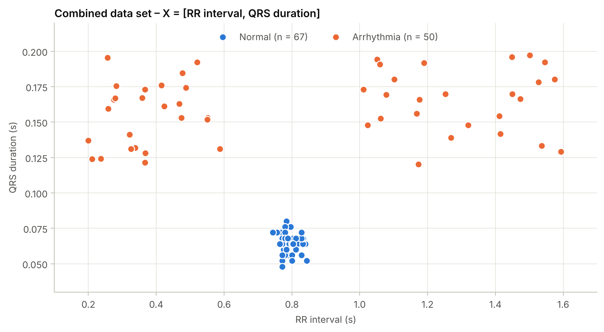
| split | Arrhythmia | Normal |
|---|---|---|
| test | 15 | 21 |
| train | 35 | 46 |
| sample | RR (s) | QRS (s) | label | predicted | decision score | correct |
|---|---|---|---|---|---|---|
| A08 | 0.3382 | 0.1317 | Arrhythmia | Arrhythmia | 1.16 | True |
| A10 | 0.4155 | 0.1760 | Arrhythmia | Arrhythmia | 1.26 | True |
| A14 | 0.5512 | 0.1531 | Arrhythmia | Arrhythmia | 1.28 | True |
| A15 | 0.2110 | 0.1240 | Arrhythmia | Arrhythmia | 1.07 | True |
| A16 | 0.4682 | 0.1629 | Arrhythmia | Arrhythmia | 1.33 | True |
| A18 | 0.4235 | 0.1612 | Arrhythmia | Arrhythmia | 1.32 | True |
| A21 | 0.5203 | 0.1923 | Arrhythmia | Arrhythmia | 1.14 | True |
| A23 | 0.3254 | 0.1311 | Arrhythmia | Arrhythmia | 1.16 | True |
| A26 | 1.5368 | 0.1332 | Arrhythmia | Arrhythmia | 1.16 | True |
| A31 | 1.0590 | 0.1907 | Arrhythmia | Arrhythmia | 1.10 | True |
| A34 | 1.3199 | 0.1479 | Arrhythmia | Arrhythmia | 1.34 | True |
| A36 | 1.1893 | 0.1917 | Arrhythmia | Arrhythmia | 1.11 | True |
| A44 | 1.4736 | 0.1663 | Arrhythmia | Arrhythmia | 1.18 | True |
| A48 | 1.1762 | 0.1659 | Arrhythmia | Arrhythmia | 1.29 | True |
| A50 | 1.0780 | 0.1694 | Arrhythmia | Arrhythmia | 1.24 | True |
| N02 | 0.8160 | 0.0640 | Normal | Normal | -1.11 | True |
| N03 | 0.8360 | 0.0680 | Normal | Normal | -1.07 | True |
| N11 | 0.7720 | 0.0640 | Normal | Normal | -1.12 | True |
| N15 | 0.7840 | 0.0600 | Normal | Normal | -1.12 | True |
| N19 | 0.7760 | 0.0720 | Normal | Normal | -1.06 | True |
| N21 | 0.7680 | 0.0720 | Normal | Normal | -1.05 | True |
| N22 | 0.7720 | 0.0680 | Normal | Normal | -1.09 | True |
| N23 | 0.7840 | 0.0640 | Normal | Normal | -1.12 | True |
| N24 | 0.7880 | 0.0560 | Normal | Normal | -1.11 | True |
| N30 | 0.7920 | 0.0640 | Normal | Normal | -1.12 | True |
| N36 | 0.8160 | 0.0640 | Normal | Normal | -1.11 | True |
| N39 | 0.8320 | 0.0640 | Normal | Normal | -1.09 | True |
| N40 | 0.8440 | 0.0520 | Normal | Normal | -1.05 | True |
| N44 | 0.7720 | 0.0480 | Normal | Normal | -1.04 | True |
| N52 | 0.7800 | 0.0560 | Normal | Normal | -1.11 | True |
| N53 | 0.7560 | 0.0720 | Normal | Normal | -1.05 | True |
| N56 | 0.7720 | 0.0560 | Normal | Normal | -1.11 | True |
| N57 | 0.7800 | 0.0720 | Normal | Normal | -1.06 | True |
| N58 | 0.8000 | 0.0640 | Normal | Normal | -1.11 | True |
| N59 | 0.8280 | 0.0720 | Normal | Normal | -1.04 | True |
| N61 | 0.8000 | 0.0640 | Normal | Normal | -1.11 | True |
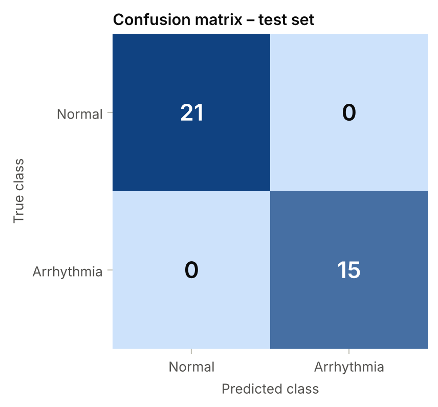
| Quantity | Value |
|---|---|
| Accuracy | 100.0 % |
| Sensitivity / Recall | 100.0 % |
| Specificity | 100.0 % |
| Precision (PPV) | 100.0 % |
| F1-score | 100.0 % |
| 5-fold CV accuracy (mean) | 100.0 % |
| 5-fold CV accuracy (SD) | 0.000 |
Accuracy = (TP + TN) / N = (15 + 21) / 36 · Sensitivity = TP / (TP + FN) = 15 / 15 · Specificity = TN / (TN + FP) = 21 / 21 · Precision = TP / (TP + FP) = 15 / 15
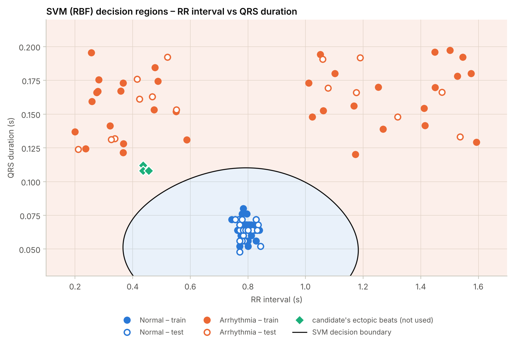
| beat | beat kind | t_R (s) | RR (s) | QRS (s) | predicted | decision score |
|---|---|---|---|---|---|---|
| 5 | ectopic (PVC-like) | 3.172 | 0.436 | 0.112 | Arrhythmia | 0.70 |
| 6 | sinus beat after the pause | 4.384 | 1.212 | 0.072 | Arrhythmia | 0.24 |
| 58 | ectopic (PVC-like) | 45.280 | 0.436 | 0.108 | Arrhythmia | 0.60 |
| 59 | sinus beat after the pause | 46.428 | 1.148 | 0.064 | Normal | -0.08 |
| 73 | ectopic (PVC-like) | 57.132 | 0.456 | 0.108 | Arrhythmia | 0.56 |
| 74 | sinus beat after the pause | 58.268 | 1.136 | 0.072 | Normal | -0.05 |
Robustness check. Using only the six segment means as the Normal class (6 Normal + 50 Arrhythmia samples) also gives a test accuracy of 100 %.
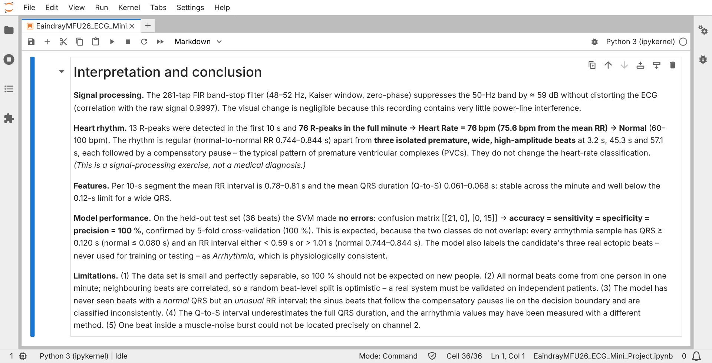
| beat | segment | t_Q (s) | t_R (s) | t_S (s) | RR (s) | QRS (s) | beat type | NN beat |
|---|---|---|---|---|---|---|---|---|
| 1 | 0–10 s | 0.212 | 0.244 | 0.280 | – | 0.068 | Normal | False |
| 2 | 0–10 s | 1.056 | 1.084 | 1.120 | 0.840 | 0.064 | Normal | True |
| 3 | 0–10 s | 1.872 | 1.900 | 1.936 | 0.816 | 0.064 | Normal | True |
| 4 | 0–10 s | 2.700 | 2.736 | 2.768 | 0.836 | 0.068 | Normal | True |
| 5 | 0–10 s | 3.140 | 3.172 | 3.252 | 0.436 | 0.112 | Ectopic (PVC-like) | False |
| 6 | 0–10 s | 4.344 | 4.384 | 4.416 | 1.212 | 0.072 | Normal | False |
| 7 | 0–10 s | 5.168 | 5.208 | 5.236 | 0.824 | 0.068 | Normal | True |
| 8 | 0–10 s | 5.996 | 6.032 | 6.060 | 0.824 | 0.064 | Normal | True |
| 9 | 0–10 s | 6.800 | 6.836 | 6.868 | 0.804 | 0.068 | Normal | True |
| 10 | 0–10 s | 7.592 | 7.632 | 7.660 | 0.796 | 0.068 | Normal | True |
| 11 | 0–10 s | 8.364 | 8.404 | 8.436 | 0.772 | 0.072 | Normal | True |
| 12 | 0–10 s | 9.156 | 9.184 | 9.220 | 0.780 | 0.064 | Normal | True |
| 13 | 0–10 s | 9.920 | 9.956 | 9.992 | 0.772 | 0.072 | Normal | True |
| 14 | 10–20 s | 10.700 | 10.728 | 10.764 | 0.772 | 0.064 | Normal | True |
| 15 | 10–20 s | 11.448 | 11.484 | 11.520 | 0.756 | 0.072 | Normal | True |
| 16 | 10–20 s | 12.240 | 12.276 | 12.308 | 0.792 | 0.068 | Normal | True |
| 17 | 10–20 s | 13.072 | 13.100 | 13.136 | 0.824 | 0.064 | Normal | True |
| 18 | 10–20 s | 13.856 | 13.884 | 13.916 | 0.784 | 0.060 | Normal | True |
| 19 | 10–20 s | 14.636 | 14.668 | 14.700 | 0.784 | 0.064 | Normal | True |
| 20 | 10–20 s | 15.424 | 15.464 | 15.500 | 0.796 | 0.076 | Normal | True |
| 21 | 10–20 s | 16.204 | 16.236 | 16.272 | 0.772 | 0.068 | Normal | True |
| 22 | 10–20 s | 16.972 | 17.012 | 17.044 | 0.776 | 0.072 | Normal | True |
| 23 | 10–20 s | 17.772 | 17.804 | 17.828 | 0.792 | 0.056 | Normal | True |
| 24 | 10–20 s | 18.532 | 18.572 | 18.604 | 0.768 | 0.072 | Normal | True |
| 25 | 10–20 s | 19.304 | 19.344 | 19.372 | 0.772 | 0.068 | Normal | True |
| 26 | 20–30 s | 20.096 | 20.128 | 20.160 | 0.784 | 0.064 | Normal | True |
| 27 | 20–30 s | 20.884 | 20.916 | 20.940 | 0.788 | 0.056 | Normal | True |
| 28 | 20–30 s | 21.660 | 21.692 | 21.724 | 0.776 | 0.064 | Normal | True |
| 29 | 20–30 s | 22.424 | 22.464 | 22.492 | 0.772 | 0.068 | Normal | True |
| 30 | 20–30 s | 23.204 | 23.244 | 23.272 | 0.780 | 0.068 | Normal | True |
| 31 | 20–30 s | 23.984 | 24.016 | 24.036 | 0.772 | 0.052 | Normal | True |
| 32 | 20–30 s | 24.776 | 24.812 | 24.844 | 0.796 | 0.068 | Normal | True |
| 33 | 20–30 s | 25.568 | 25.604 | 25.632 | 0.792 | 0.064 | Normal | True |
| 34 | 20–30 s | 26.348 | 26.388 | 26.428 | 0.784 | 0.080 | Normal | True |
| 35 | 20–30 s | 27.144 | 27.180 | 27.212 | 0.792 | 0.068 | Normal | True |
| 36 | 20–30 s | 27.920 | 27.960 | 27.996 | 0.780 | 0.076 | Normal | True |
| 37 | 20–30 s | 28.696 | 28.724 | 28.760 | 0.764 | 0.064 | Normal | True |
| 38 | 20–30 s | 29.496 | 29.532 | 29.564 | 0.808 | 0.068 | Normal | True |
| 39 | 30–40 s | 30.320 | 30.348 | 30.384 | 0.816 | 0.064 | Normal | True |
| 40 | 30–40 s | 31.116 | 31.148 | 31.172 | 0.800 | 0.056 | Normal | True |
| 41 | 30–40 s | 31.944 | 31.976 | 32.000 | 0.828 | 0.056 | Normal | True |
| 42 | 30–40 s | 32.772 | 32.808 | 32.836 | 0.832 | 0.064 | Normal | True |
| 43 | 30–40 s | 33.620 | 33.652 | 33.672 | 0.844 | 0.052 | Normal | True |
| 44 | 30–40 s | 34.440 | 34.480 | 34.512 | 0.828 | 0.072 | Normal | True |
| 45 | 30–40 s | 34.972 | 35.012 | 35.024 | 0.532 | 0.052 | Low-confidence (noise) | False |
| 46 | 30–40 s | 36.028 | 36.060 | 36.092 | 1.048 | 0.064 | Normal | False |
| 47 | 30–40 s | 36.820 | 36.852 | 36.888 | 0.792 | 0.068 | Normal | True |
| 48 | 30–40 s | 37.600 | 37.628 | 37.660 | 0.776 | 0.060 | Normal | True |
| 49 | 30–40 s | 38.376 | 38.400 | 38.424 | 0.772 | 0.048 | Normal | True |
| 50 | 30–40 s | 39.140 | 39.172 | 39.204 | 0.772 | 0.064 | Normal | True |
| 51 | 30–40 s | 39.924 | 39.960 | 39.992 | 0.788 | 0.068 | Normal | True |
| 52 | 40–50 s | 40.752 | 40.788 | 40.820 | 0.828 | 0.068 | Normal | True |
| 53 | 40–50 s | 41.588 | 41.620 | 41.656 | 0.832 | 0.068 | Normal | True |
| 54 | 40–50 s | 42.416 | 42.448 | 42.484 | 0.828 | 0.068 | Normal | True |
| 55 | 40–50 s | 43.232 | 43.260 | 43.292 | 0.812 | 0.060 | Normal | True |
| 56 | 40–50 s | 44.032 | 44.064 | 44.100 | 0.804 | 0.068 | Normal | True |
| 57 | 40–50 s | 44.820 | 44.844 | 44.876 | 0.780 | 0.056 | Normal | True |
| 58 | 40–50 s | 45.252 | 45.280 | 45.360 | 0.436 | 0.108 | Ectopic (PVC-like) | False |
| 59 | 40–50 s | 46.396 | 46.428 | 46.460 | 1.148 | 0.064 | Normal | False |
| 60 | 40–50 s | 47.144 | 47.184 | 47.216 | 0.756 | 0.072 | Normal | True |
| 61 | 40–50 s | 47.912 | 47.948 | 47.976 | 0.764 | 0.064 | Normal | True |
| 62 | 40–50 s | 48.680 | 48.712 | 48.744 | 0.764 | 0.064 | Normal | True |
| 63 | 40–50 s | 49.456 | 49.484 | 49.512 | 0.772 | 0.056 | Normal | True |
| 64 | 50–60 s | 50.224 | 50.264 | 50.296 | 0.780 | 0.072 | Normal | True |
| 65 | 50–60 s | 51.024 | 51.064 | 51.088 | 0.800 | 0.064 | Normal | True |
| 66 | 50–60 s | 51.852 | 51.892 | 51.924 | 0.828 | 0.072 | Normal | True |
| 67 | 50–60 s | 52.672 | 52.704 | 52.740 | 0.812 | 0.068 | Normal | True |
| 68 | 50–60 s | 53.476 | 53.504 | 53.540 | 0.800 | 0.064 | Normal | True |
| 69 | 50–60 s | 54.252 | 54.284 | 54.320 | 0.780 | 0.068 | Normal | True |
| 70 | 50–60 s | 55.036 | 55.072 | 55.104 | 0.788 | 0.068 | Normal | True |
| 71 | 50–60 s | 55.840 | 55.872 | 55.892 | 0.800 | 0.052 | Normal | True |
| 72 | 50–60 s | 56.648 | 56.676 | 56.712 | 0.804 | 0.064 | Normal | True |
| 73 | 50–60 s | 57.104 | 57.132 | 57.212 | 0.456 | 0.108 | Ectopic (PVC-like) | False |
| 74 | 50–60 s | 58.228 | 58.268 | 58.300 | 1.136 | 0.072 | Normal | False |
| 75 | 50–60 s | 58.976 | 59.012 | 59.048 | 0.744 | 0.072 | Normal | True |
| 76 | 50–60 s | 59.764 | 59.796 | 59.824 | 0.784 | 0.060 | Normal | True |
| sample | RR (s) | QRS (s) | label | split |
|---|---|---|---|---|
| N01 | 0.8400 | 0.0640 | Normal | train |
| N02 | 0.8160 | 0.0640 | Normal | test |
| N03 | 0.8360 | 0.0680 | Normal | test |
| N04 | 0.8240 | 0.0680 | Normal | train |
| N05 | 0.8240 | 0.0640 | Normal | train |
| N06 | 0.8040 | 0.0680 | Normal | train |
| N07 | 0.7960 | 0.0680 | Normal | train |
| N08 | 0.7720 | 0.0720 | Normal | train |
| N09 | 0.7800 | 0.0640 | Normal | train |
| N10 | 0.7720 | 0.0720 | Normal | train |
| N11 | 0.7720 | 0.0640 | Normal | test |
| N12 | 0.7560 | 0.0720 | Normal | train |
| N13 | 0.7920 | 0.0680 | Normal | train |
| N14 | 0.8240 | 0.0640 | Normal | train |
| N15 | 0.7840 | 0.0600 | Normal | test |
| N16 | 0.7840 | 0.0640 | Normal | train |
| N17 | 0.7960 | 0.0760 | Normal | train |
| N18 | 0.7720 | 0.0680 | Normal | train |
| N19 | 0.7760 | 0.0720 | Normal | test |
| N20 | 0.7920 | 0.0560 | Normal | train |
| N21 | 0.7680 | 0.0720 | Normal | test |
| N22 | 0.7720 | 0.0680 | Normal | test |
| N23 | 0.7840 | 0.0640 | Normal | test |
| N24 | 0.7880 | 0.0560 | Normal | test |
| N25 | 0.7760 | 0.0640 | Normal | train |
| N26 | 0.7720 | 0.0680 | Normal | train |
| N27 | 0.7800 | 0.0680 | Normal | train |
| N28 | 0.7720 | 0.0520 | Normal | train |
| N29 | 0.7960 | 0.0680 | Normal | train |
| N30 | 0.7920 | 0.0640 | Normal | test |
| N31 | 0.7840 | 0.0800 | Normal | train |
| N32 | 0.7920 | 0.0680 | Normal | train |
| N33 | 0.7800 | 0.0760 | Normal | train |
| N34 | 0.7640 | 0.0640 | Normal | train |
| N35 | 0.8080 | 0.0680 | Normal | train |
| N36 | 0.8160 | 0.0640 | Normal | test |
| N37 | 0.8000 | 0.0560 | Normal | train |
| N38 | 0.8280 | 0.0560 | Normal | train |
| N39 | 0.8320 | 0.0640 | Normal | test |
| N40 | 0.8440 | 0.0520 | Normal | test |
| N41 | 0.8280 | 0.0720 | Normal | train |
| N42 | 0.7920 | 0.0680 | Normal | train |
| N43 | 0.7760 | 0.0600 | Normal | train |
| N44 | 0.7720 | 0.0480 | Normal | test |
| N45 | 0.7720 | 0.0640 | Normal | train |
| N46 | 0.7880 | 0.0680 | Normal | train |
| N47 | 0.8280 | 0.0680 | Normal | train |
| N48 | 0.8320 | 0.0680 | Normal | train |
| N49 | 0.8280 | 0.0680 | Normal | train |
| N50 | 0.8120 | 0.0600 | Normal | train |
| N51 | 0.8040 | 0.0680 | Normal | train |
| N52 | 0.7800 | 0.0560 | Normal | test |
| N53 | 0.7560 | 0.0720 | Normal | test |
| N54 | 0.7640 | 0.0640 | Normal | train |
| N55 | 0.7640 | 0.0640 | Normal | train |
| N56 | 0.7720 | 0.0560 | Normal | test |
| N57 | 0.7800 | 0.0720 | Normal | test |
| N58 | 0.8000 | 0.0640 | Normal | test |
| N59 | 0.8280 | 0.0720 | Normal | test |
| sample | RR (s) | QRS (s) | label | split |
|---|---|---|---|---|
| N60 | 0.8120 | 0.0680 | Normal | train |
| N61 | 0.8000 | 0.0640 | Normal | test |
| N62 | 0.7800 | 0.0680 | Normal | train |
| N63 | 0.7880 | 0.0680 | Normal | train |
| N64 | 0.8000 | 0.0520 | Normal | train |
| N65 | 0.8040 | 0.0640 | Normal | train |
| N66 | 0.7440 | 0.0720 | Normal | train |
| N67 | 0.7840 | 0.0600 | Normal | train |
| A01 | 0.3668 | 0.1216 | Arrhythmia | train |
| A02 | 0.4881 | 0.1743 | Arrhythmia | train |
| A03 | 0.2001 | 0.1369 | Arrhythmia | train |
| A04 | 0.3209 | 0.1412 | Arrhythmia | train |
| A05 | 0.2587 | 0.1593 | Arrhythmia | train |
| A06 | 0.2369 | 0.1243 | Arrhythmia | train |
| A07 | 0.2745 | 0.1659 | Arrhythmia | train |
| A08 | 0.3382 | 0.1317 | Arrhythmia | test |
| A09 | 0.3587 | 0.1671 | Arrhythmia | train |
| A10 | 0.4155 | 0.1760 | Arrhythmia | test |
| A11 | 0.3677 | 0.1282 | Arrhythmia | train |
| A12 | 0.4741 | 0.1531 | Arrhythmia | train |
| A13 | 0.2818 | 0.1756 | Arrhythmia | train |
| A14 | 0.5513 | 0.1531 | Arrhythmia | test |
| A15 | 0.2110 | 0.1240 | Arrhythmia | test |
| A16 | 0.4682 | 0.1629 | Arrhythmia | test |
| A17 | 0.3669 | 0.1731 | Arrhythmia | train |
| A18 | 0.4235 | 0.1612 | Arrhythmia | test |
| A19 | 0.2561 | 0.1956 | Arrhythmia | train |
| A20 | 0.2792 | 0.1669 | Arrhythmia | train |
| A21 | 0.5203 | 0.1923 | Arrhythmia | test |
| A22 | 0.5873 | 0.1310 | Arrhythmia | train |
| A23 | 0.3254 | 0.1311 | Arrhythmia | test |
| A24 | 0.4769 | 0.1846 | Arrhythmia | train |
| A25 | 0.5506 | 0.1518 | Arrhythmia | train |
| A26 | 1.5368 | 0.1332 | Arrhythmia | test |
| A27 | 1.0510 | 0.1942 | Arrhythmia | train |
| A28 | 1.0234 | 0.1478 | Arrhythmia | train |
| A29 | 1.1019 | 0.1801 | Arrhythmia | train |
| A30 | 1.5269 | 0.1781 | Arrhythmia | train |
| A31 | 1.0590 | 0.1907 | Arrhythmia | test |
| A32 | 1.2527 | 0.1699 | Arrhythmia | train |
| A33 | 1.5747 | 0.1801 | Arrhythmia | train |
| A34 | 1.3199 | 0.1479 | Arrhythmia | test |
| A35 | 1.4151 | 0.1416 | Arrhythmia | train |
| A36 | 1.1893 | 0.1917 | Arrhythmia | test |
| A37 | 1.4119 | 0.1542 | Arrhythmia | train |
| A38 | 1.5008 | 0.1972 | Arrhythmia | train |
| A39 | 1.0110 | 0.1731 | Arrhythmia | train |
| A40 | 1.4501 | 0.1697 | Arrhythmia | train |
| A41 | 1.5933 | 0.1292 | Arrhythmia | train |
| A42 | 1.4489 | 0.1960 | Arrhythmia | train |
| A43 | 1.1683 | 0.1560 | Arrhythmia | train |
| A44 | 1.4736 | 0.1663 | Arrhythmia | test |
| A45 | 1.0619 | 0.1527 | Arrhythmia | train |
| A46 | 1.2687 | 0.1390 | Arrhythmia | train |
| A47 | 1.5452 | 0.1923 | Arrhythmia | train |
| A48 | 1.1762 | 0.1659 | Arrhythmia | test |
| A49 | 1.1727 | 0.1202 | Arrhythmia | train |
| A50 | 1.0780 | 0.1694 | Arrhythmia | test |
Environment printed by the notebook (Step 0.1):
Student (GitHub) : EaindrayMFU26 Project : FACE IT 2026 - Hands-on Mini Project (ECG, AHA DB record 0001) Run at : 2026-10-15 14:33 UTC Python : 3.13.16 (Linux x86_64) Working folder : /home/user/FACE-IT-2026-ECG-Mini-Project numpy : 2.5.3 scipy : 1.18.1 matplotlib : 3.11.2 pandas : 3.0.5 sklearn : 1.9.1 wfdb : 4.3.1
| Notebook | EaindrayMFU26_ECG_Mini_Project.ipynb (executed top-to-bottom in JupyterLab, execution counts 1–27) |
| Data | data/ahadb/0001.* (PhysioNet ahadb v1.0.0, SHA-256 verified);
data/arrhythmia_training_data.csv |
| Outputs | figures/ (plots, 200 dpi), results/ (CSV/JSON tables),
screenshots/ (JupyterLab screenshots) |
| Re-run | pip install -r requirements.txt, then jupyter lab → Run ▸ Run All Cells |